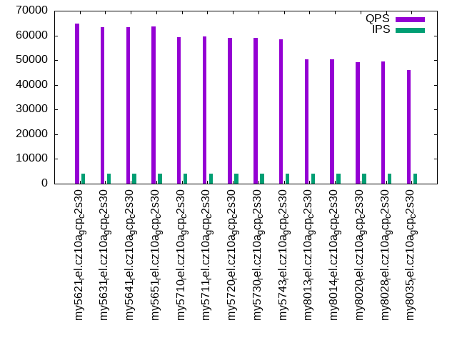

This is a report for the insert benchmark with 160M docs and 8 client(s). It is generated by scripts (bash, awk, sed) and Tufte might not be impressed. An overview of the insert benchmark is here and a short update is here. Below, by DBMS, I mean DBMS+version.config. An example is my8020.c10b40 where my means MySQL, 8020 is version 8.0.20 and c10b40 is the name for the configuration file.
The test server is a c2-standard-30 from GCP with 15 cores, hyperthreads disabled, Ubuntu 22.04 and XFS using SW RAID 0 over 4 local SSDs. The benchmark was run with 8 clients and there were 1, 2 or 3 connections per client. It uses 8 tables with a client per table. It loads 20M rows per table without secondary indexes, creates 3 secondary indexes per table, then inserts 50m+50m rows per table with a delete per insert to avoid growing the table. It then does 6 read+write tests for 1200s each that do queries as fast as possible with 100,100,500,500,1000,1000 inserts/s and the same for deletes/s per client concurrent with the queries. The database is cached in memory. Clients and the DBMS share one server. The per-database configs are in the per-database subdirectories here.
The tested DBMS are:
The numbers are inserts/s for l.i0, l.i1 and l.i2, indexed docs (or rows) /s for l.x and queries/s for qr100, qp100 thru qr1000, qp1000" The values are the average rate over the entire test for inserts (IPS) and queries (QPS). The range of values for IPS and QPS is split into 3 parts: bottom 25%, middle 50%, top 25%. Values in the bottom 25% have a red background, values in the top 25% have a green background and values in the middle have no color. A gray background is used for values that can be ignored because the DBMS did not sustain the target insert rate. Red backgrounds are not used when the minimum value is within 80% of the max value.
| dbms | l.i0 | l.x | l.i1 | l.i2 | qr100 | qp100 | qr500 | qp500 | qr1000 | qp1000 |
|---|---|---|---|---|---|---|---|---|---|---|
| my5621_rel.cz10a_gcp_c2s30 | 792079 | 610687 | 90549 | 24930 | 78402 | 66094 | 79412 | 64775 | 78534 | 63656 |
| my5631_rel.cz10a_gcp_c2s30 | 769231 | 590406 | 88889 | 38314 | 79102 | 65503 | 78008 | 63364 | 76865 | 62903 |
| my5641_rel.cz10a_gcp_c2s30 | 765550 | 601504 | 89410 | 38259 | 79506 | 65713 | 78237 | 63300 | 77339 | 62894 |
| my5651_rel.cz10a_gcp_c2s30 | 769231 | 603774 | 89510 | 38480 | 78677 | 65915 | 78153 | 63678 | 78333 | 63461 |
| my5710_rel.cz10a_gcp_c2s30 | 747664 | 1176471 | 122558 | 46163 | 72404 | 60829 | 70614 | 59290 | 69497 | 57782 |
| my5711_rel.cz10a_gcp_c2s30 | 733945 | 1185186 | 123839 | 50518 | 72653 | 61338 | 71180 | 59694 | 70007 | 58097 |
| my5720_rel.cz10a_gcp_c2s30 | 740741 | 1185186 | 121396 | 50955 | 71937 | 60637 | 70069 | 59058 | 69539 | 57666 |
| my5730_rel.cz10a_gcp_c2s30 | 747664 | 1176471 | 121812 | 51020 | 71759 | 60524 | 70009 | 59037 | 68804 | 57753 |
| my5743_rel.cz10a_gcp_c2s30 | 754717 | 1167884 | 121998 | 50955 | 70730 | 59834 | 68994 | 58356 | 67771 | 56966 |
| my8013_rel.cz10a_gcp_c2s30 | 707965 | 1185186 | 95636 | 48485 | 66893 | 51878 | 64577 | 50268 | 62649 | 48453 |
| my8014_rel.cz10a_gcp_c2s30 | 701754 | 1167884 | 95323 | 48222 | 66940 | 52134 | 64625 | 50422 | 62490 | 48768 |
| my8020_rel.cz10a_gcp_c2s30 | 707965 | 377359 | 93240 | 47534 | 64310 | 50150 | 62553 | 49033 | 60754 | 47341 |
| my8028_rel.cz10a_gcp_c2s30 | 704846 | 888889 | 107418 | 50955 | 61014 | 50558 | 59428 | 49344 | 58150 | 48072 |
| my8035_rel.cz10a_gcp_c2s30 | 663900 | 846561 | 101298 | 48368 | 67292 | 47245 | 65703 | 45944 | 63901 | 44728 |
This table has relative throughput, throughput for the DBMS relative to the DBMS in the first line, using the absolute throughput from the previous table. Values less than 0.95 have a yellow background. Values greater than 1.05 have a blue background.
| dbms | l.i0 | l.x | l.i1 | l.i2 | qr100 | qp100 | qr500 | qp500 | qr1000 | qp1000 |
|---|---|---|---|---|---|---|---|---|---|---|
| my5621_rel.cz10a_gcp_c2s30 | 1.00 | 1.00 | 1.00 | 1.00 | 1.00 | 1.00 | 1.00 | 1.00 | 1.00 | 1.00 |
| my5631_rel.cz10a_gcp_c2s30 | 0.97 | 0.97 | 0.98 | 1.54 | 1.01 | 0.99 | 0.98 | 0.98 | 0.98 | 0.99 |
| my5641_rel.cz10a_gcp_c2s30 | 0.97 | 0.98 | 0.99 | 1.53 | 1.01 | 0.99 | 0.99 | 0.98 | 0.98 | 0.99 |
| my5651_rel.cz10a_gcp_c2s30 | 0.97 | 0.99 | 0.99 | 1.54 | 1.00 | 1.00 | 0.98 | 0.98 | 1.00 | 1.00 |
| my5710_rel.cz10a_gcp_c2s30 | 0.94 | 1.93 | 1.35 | 1.85 | 0.92 | 0.92 | 0.89 | 0.92 | 0.88 | 0.91 |
| my5711_rel.cz10a_gcp_c2s30 | 0.93 | 1.94 | 1.37 | 2.03 | 0.93 | 0.93 | 0.90 | 0.92 | 0.89 | 0.91 |
| my5720_rel.cz10a_gcp_c2s30 | 0.94 | 1.94 | 1.34 | 2.04 | 0.92 | 0.92 | 0.88 | 0.91 | 0.89 | 0.91 |
| my5730_rel.cz10a_gcp_c2s30 | 0.94 | 1.93 | 1.35 | 2.05 | 0.92 | 0.92 | 0.88 | 0.91 | 0.88 | 0.91 |
| my5743_rel.cz10a_gcp_c2s30 | 0.95 | 1.91 | 1.35 | 2.04 | 0.90 | 0.91 | 0.87 | 0.90 | 0.86 | 0.89 |
| my8013_rel.cz10a_gcp_c2s30 | 0.89 | 1.94 | 1.06 | 1.94 | 0.85 | 0.78 | 0.81 | 0.78 | 0.80 | 0.76 |
| my8014_rel.cz10a_gcp_c2s30 | 0.89 | 1.91 | 1.05 | 1.93 | 0.85 | 0.79 | 0.81 | 0.78 | 0.80 | 0.77 |
| my8020_rel.cz10a_gcp_c2s30 | 0.89 | 0.62 | 1.03 | 1.91 | 0.82 | 0.76 | 0.79 | 0.76 | 0.77 | 0.74 |
| my8028_rel.cz10a_gcp_c2s30 | 0.89 | 1.46 | 1.19 | 2.04 | 0.78 | 0.76 | 0.75 | 0.76 | 0.74 | 0.76 |
| my8035_rel.cz10a_gcp_c2s30 | 0.84 | 1.39 | 1.12 | 1.94 | 0.86 | 0.71 | 0.83 | 0.71 | 0.81 | 0.70 |
This lists the average rate of inserts/s for the tests that do inserts concurrent with queries. For such tests the query rate is listed in the table above. The read+write tests are setup so that the insert rate should match the target rate every second. Cells that are not at least 95% of the target have a red background to indicate a failure to satisfy the target.
| dbms | qr100.L1 | qp100.L2 | qr500.L3 | qp500.L4 | qr1000.L5 | qp1000.L6 |
|---|---|---|---|---|---|---|
| my5621_rel.cz10a_gcp_c2s30 | 794 | 794 | 3967 | 3967 | 7947 | 7947 |
| my5631_rel.cz10a_gcp_c2s30 | 793 | 794 | 3970 | 3970 | 7940 | 7940 |
| my5641_rel.cz10a_gcp_c2s30 | 794 | 794 | 3970 | 3967 | 7940 | 7940 |
| my5651_rel.cz10a_gcp_c2s30 | 794 | 794 | 3970 | 3967 | 7940 | 7947 |
| my5710_rel.cz10a_gcp_c2s30 | 794 | 794 | 3967 | 3967 | 7947 | 7947 |
| my5711_rel.cz10a_gcp_c2s30 | 794 | 794 | 3970 | 3967 | 7940 | 7934 |
| my5720_rel.cz10a_gcp_c2s30 | 794 | 794 | 3967 | 3970 | 7947 | 7940 |
| my5730_rel.cz10a_gcp_c2s30 | 793 | 794 | 3970 | 3970 | 7940 | 7934 |
| my5743_rel.cz10a_gcp_c2s30 | 793 | 794 | 3970 | 3970 | 7940 | 7940 |
| my8013_rel.cz10a_gcp_c2s30 | 794 | 794 | 3967 | 3970 | 7947 | 7947 |
| my8014_rel.cz10a_gcp_c2s30 | 794 | 793 | 3970 | 3970 | 7940 | 7940 |
| my8020_rel.cz10a_gcp_c2s30 | 794 | 794 | 3967 | 3970 | 7947 | 7947 |
| my8028_rel.cz10a_gcp_c2s30 | 794 | 794 | 3967 | 3967 | 7947 | 7947 |
| my8035_rel.cz10a_gcp_c2s30 | 794 | 794 | 3970 | 3970 | 7940 | 7940 |
| target | 800 | 800 | 4000 | 4000 | 8000 | 8000 |
l.i0: load without secondary indexes. Graphs for performance per 1-second interval are here.
Average throughput:
Insert response time histogram: each cell has the percentage of responses that take <= the time in the header and max is the max response time in seconds. For the max column values in the top 25% of the range have a red background and in the bottom 25% of the range have a green background. The red background is not used when the min value is within 80% of the max value.
| dbms | 256us | 1ms | 4ms | 16ms | 64ms | 256ms | 1s | 4s | 16s | gt | max |
|---|---|---|---|---|---|---|---|---|---|---|---|
| my5621_rel.cz10a_gcp_c2s30 | 98.055 | 1.827 | 0.016 | 0.031 | 0.070 | 0.001 | 0.300 | ||||
| my5631_rel.cz10a_gcp_c2s30 | 97.281 | 2.600 | 0.015 | 0.032 | 0.071 | 0.247 | |||||
| my5641_rel.cz10a_gcp_c2s30 | 97.325 | 2.557 | 0.017 | 0.033 | 0.068 | 0.253 | |||||
| my5651_rel.cz10a_gcp_c2s30 | 97.337 | 2.540 | 0.017 | 0.040 | 0.065 | 0.248 | |||||
| my5710_rel.cz10a_gcp_c2s30 | 91.182 | 8.742 | 0.040 | 0.022 | 0.015 | 0.235 | |||||
| my5711_rel.cz10a_gcp_c2s30 | 87.648 | 12.274 | 0.040 | 0.024 | 0.015 | 0.226 | |||||
| my5720_rel.cz10a_gcp_c2s30 | 81.981 | 17.951 | 0.034 | 0.019 | 0.015 | 0.229 | |||||
| my5730_rel.cz10a_gcp_c2s30 | 86.734 | 13.197 | 0.032 | 0.021 | 0.015 | 0.245 | |||||
| my5743_rel.cz10a_gcp_c2s30 | 87.999 | 11.933 | 0.029 | 0.024 | 0.015 | 0.245 | |||||
| my8013_rel.cz10a_gcp_c2s30 | 79.485 | 20.413 | 0.060 | 0.026 | 0.015 | 0.244 | |||||
| my8014_rel.cz10a_gcp_c2s30 | 79.055 | 20.837 | 0.068 | 0.024 | 0.015 | 0.001 | 0.259 | ||||
| my8020_rel.cz10a_gcp_c2s30 | 79.859 | 20.055 | 0.046 | 0.023 | 0.015 | nonzero | 0.273 | ||||
| my8028_rel.cz10a_gcp_c2s30 | 75.333 | 24.592 | 0.045 | 0.015 | 0.015 | 0.246 | |||||
| my8035_rel.cz10a_gcp_c2s30 | 11.411 | 88.506 | 0.047 | 0.021 | 0.015 | nonzero | 0.271 |
Performance metrics for the DBMS listed above. Some are normalized by throughput, others are not. Legend for results is here.
ips qps rps rmbps wps wmbps rpq rkbpq wpi wkbpi csps cpups cspq cpupq dbgb1 dbgb2 rss maxop p50 p99 tag 792079 0 0 0.0 1590.7 158.1 0.000 0.000 0.002 0.204 75363 70.6 0.095 13 10.6 75.1 15.6 0.300 107583 84109 my5621_rel.cz10a_gcp_c2s30 769231 0 0 0.0 1493.9 154.5 0.000 0.000 0.002 0.206 73830 70.6 0.096 14 10.6 75.1 16.7 0.247 103320 81413 my5631_rel.cz10a_gcp_c2s30 765550 0 0 0.0 1491.6 150.9 0.000 0.000 0.002 0.202 73872 70.5 0.096 14 10.6 75.1 16.8 0.253 103189 79914 my5641_rel.cz10a_gcp_c2s30 769231 0 0 0.0 1558.6 153.6 0.000 0.000 0.002 0.204 72311 70.7 0.094 14 10.6 75.1 16.8 0.248 103489 78739 my5651_rel.cz10a_gcp_c2s30 747664 0 0 0.0 1806.4 157.7 0.000 0.000 0.002 0.216 69969 71.1 0.094 14 10.6 75.1 17.7 0.235 101691 79839 my5710_rel.cz10a_gcp_c2s30 733945 0 0 0.0 1824.0 157.3 0.000 0.000 0.002 0.219 69045 70.8 0.094 14 10.6 75.1 17.6 0.226 101421 79615 my5711_rel.cz10a_gcp_c2s30 740741 0 0 0.0 1816.1 157.1 0.000 0.000 0.002 0.217 72043 70.6 0.097 14 10.6 75.1 17.6 0.229 100725 79314 my5720_rel.cz10a_gcp_c2s30 747664 0 0 0.0 1835.9 159.2 0.000 0.000 0.002 0.218 73235 70.8 0.098 14 10.6 75.1 17.7 0.245 102290 80312 my5730_rel.cz10a_gcp_c2s30 754717 0 0 0.0 1846.6 155.9 0.000 0.000 0.002 0.212 73311 70.7 0.097 14 10.6 75.1 17.8 0.245 102390 79115 my5743_rel.cz10a_gcp_c2s30 707965 0 0 0.0 1822.3 157.8 0.000 0.000 0.003 0.228 190885 76.4 0.270 16 10.6 75.1 17.4 0.244 95797 72920 my8013_rel.cz10a_gcp_c2s30 701754 0 0 0.0 1849.0 155.7 0.000 0.000 0.003 0.227 185072 76.4 0.264 16 10.6 75.1 17.4 0.259 96228 74919 my8014_rel.cz10a_gcp_c2s30 707965 0 0 0.0 1950.3 159.2 0.000 0.000 0.003 0.230 231396 75.3 0.327 16 10.6 75.1 17.3 0.273 96795 74419 my8020_rel.cz10a_gcp_c2s30 704846 0 0 0.0 1935.7 155.3 0.000 0.000 0.003 0.226 246981 75.1 0.350 16 10.6 75.1 17.2 0.246 96196 73745 my8028_rel.cz10a_gcp_c2s30 663900 0 0 0.0 1974.8 148.4 0.000 0.000 0.003 0.229 229510 74.5 0.346 17 10.6 75.1 18.0 0.271 90103 70024 my8035_rel.cz10a_gcp_c2s30
l.x: create secondary indexes.
Average throughput:
Performance metrics for the DBMS listed above. Some are normalized by throughput, others are not. Legend for results is here.
ips qps rps rmbps wps wmbps rpq rkbpq wpi wkbpi csps cpups cspq cpupq dbgb1 dbgb2 rss maxop p50 p99 tag 610687 0 0 0.0 8033.3 662.8 0.000 0.000 0.013 1.111 18846 41.0 0.031 10 22.3 86.8 27.3 0.001 NA NA my5621_rel.cz10a_gcp_c2s30 590406 0 0 0.0 7867.7 642.4 0.000 0.000 0.013 1.114 18477 40.7 0.031 10 22.3 86.8 28.6 0.001 NA NA my5631_rel.cz10a_gcp_c2s30 601504 0 0 0.0 7545.2 642.1 0.000 0.000 0.013 1.093 16718 41.1 0.028 10 22.3 86.8 27.0 0.001 NA NA my5641_rel.cz10a_gcp_c2s30 603774 0 0 0.0 7683.9 652.8 0.000 0.000 0.013 1.107 17162 41.5 0.028 10 22.3 86.8 27.2 0.001 NA NA my5651_rel.cz10a_gcp_c2s30 1176471 0 0 0.0 13685.1 1106.3 0.000 0.000 0.012 0.963 46671 35.6 0.040 5 24.3 88.8 26.6 0.028 NA NA my5710_rel.cz10a_gcp_c2s30 1185186 0 0 0.0 13398.7 1103.9 0.000 0.000 0.011 0.954 43939 35.5 0.037 4 24.3 88.8 27.0 0.028 NA NA my5711_rel.cz10a_gcp_c2s30 1185186 0 0 0.0 13551.9 1105.0 0.000 0.000 0.011 0.955 45242 35.6 0.038 5 24.3 88.8 26.9 0.026 NA NA my5720_rel.cz10a_gcp_c2s30 1176471 0 0 0.0 13345.6 1102.4 0.000 0.000 0.011 0.960 44192 36.0 0.038 5 24.3 88.8 26.4 0.031 NA NA my5730_rel.cz10a_gcp_c2s30 1167884 0 0 0.0 13162.5 1097.9 0.000 0.000 0.011 0.963 42116 36.3 0.036 5 24.3 88.8 26.2 0.030 NA NA my5743_rel.cz10a_gcp_c2s30 1185186 0 0 0.0 12991.0 1100.9 0.000 0.000 0.011 0.951 57718 40.3 0.049 5 24.2 88.8 26.7 0.002 NA NA my8013_rel.cz10a_gcp_c2s30 1167884 0 0 0.0 12675.2 1090.2 0.000 0.000 0.011 0.956 48332 38.5 0.041 5 24.2 88.8 26.6 0.002 NA NA my8014_rel.cz10a_gcp_c2s30 377359 0 3 0.1 4663.6 337.6 0.000 0.000 0.012 0.916 109335 41.6 0.290 17 24.2 88.8 22.1 0.002 NA NA my8020_rel.cz10a_gcp_c2s30 888889 0 4547 282.2 19232.2 930.4 0.005 0.325 0.022 1.072 107892 77.2 0.121 13 24.2 88.8 27.4 0.002 NA NA my8028_rel.cz10a_gcp_c2s30 846561 0 4423 274.6 18451.2 903.1 0.005 0.332 0.022 1.092 77933 83.9 0.092 15 24.2 88.8 27.4 0.002 NA NA my8035_rel.cz10a_gcp_c2s30
l.i1: continue load after secondary indexes created with 50 inserts per transaction. Graphs for performance per 1-second interval are here.
Average throughput:
Insert response time histogram: each cell has the percentage of responses that take <= the time in the header and max is the max response time in seconds. For the max column values in the top 25% of the range have a red background and in the bottom 25% of the range have a green background. The red background is not used when the min value is within 80% of the max value.
| dbms | 256us | 1ms | 4ms | 16ms | 64ms | 256ms | 1s | 4s | 16s | gt | max |
|---|---|---|---|---|---|---|---|---|---|---|---|
| my5621_rel.cz10a_gcp_c2s30 | 0.001 | 49.078 | 50.482 | 0.415 | 0.025 | 0.251 | |||||
| my5631_rel.cz10a_gcp_c2s30 | 0.001 | 47.372 | 52.188 | 0.416 | 0.023 | nonzero | 0.269 | ||||
| my5641_rel.cz10a_gcp_c2s30 | 0.001 | 48.012 | 51.550 | 0.413 | 0.024 | nonzero | 0.292 | ||||
| my5651_rel.cz10a_gcp_c2s30 | nonzero | 48.033 | 51.529 | 0.413 | 0.024 | nonzero | 0.271 | ||||
| my5710_rel.cz10a_gcp_c2s30 | nonzero | 79.984 | 19.912 | 0.087 | 0.016 | nonzero | 0.388 | ||||
| my5711_rel.cz10a_gcp_c2s30 | nonzero | 80.585 | 19.314 | 0.084 | 0.016 | nonzero | 0.299 | ||||
| my5720_rel.cz10a_gcp_c2s30 | nonzero | 78.818 | 21.094 | 0.072 | 0.016 | nonzero | 0.370 | ||||
| my5730_rel.cz10a_gcp_c2s30 | nonzero | 79.107 | 20.799 | 0.078 | 0.016 | nonzero | 0.279 | ||||
| my5743_rel.cz10a_gcp_c2s30 | 79.160 | 20.753 | 0.070 | 0.016 | nonzero | 0.554 | |||||
| my8013_rel.cz10a_gcp_c2s30 | 57.917 | 41.781 | 0.286 | 0.016 | nonzero | 0.360 | |||||
| my8014_rel.cz10a_gcp_c2s30 | 57.440 | 42.267 | 0.277 | 0.016 | 0.252 | ||||||
| my8020_rel.cz10a_gcp_c2s30 | 54.657 | 45.069 | 0.253 | 0.018 | 0.003 | 0.373 | |||||
| my8028_rel.cz10a_gcp_c2s30 | 70.364 | 29.418 | 0.198 | 0.014 | 0.006 | 0.398 | |||||
| my8035_rel.cz10a_gcp_c2s30 | 64.797 | 34.968 | 0.211 | 0.022 | 0.003 | 0.441 |
Delete response time histogram: each cell has the percentage of responses that take <= the time in the header and max is the max response time in seconds. For the max column values in the top 25% of the range have a red background and in the bottom 25% of the range have a green background. The red background is not used when the min value is within 80% of the max value.
| dbms | 256us | 1ms | 4ms | 16ms | 64ms | 256ms | 1s | 4s | 16s | gt | max |
|---|---|---|---|---|---|---|---|---|---|---|---|
| my5621_rel.cz10a_gcp_c2s30 | 0.004 | 65.001 | 34.621 | 0.354 | 0.020 | 0.251 | |||||
| my5631_rel.cz10a_gcp_c2s30 | 0.004 | 62.708 | 36.914 | 0.355 | 0.019 | nonzero | 0.266 | ||||
| my5641_rel.cz10a_gcp_c2s30 | 0.004 | 63.988 | 35.637 | 0.351 | 0.019 | 0.250 | |||||
| my5651_rel.cz10a_gcp_c2s30 | 0.004 | 63.845 | 35.778 | 0.353 | 0.020 | 0.240 | |||||
| my5710_rel.cz10a_gcp_c2s30 | 0.001 | 80.725 | 19.186 | 0.073 | 0.015 | 0.224 | |||||
| my5711_rel.cz10a_gcp_c2s30 | 0.001 | 81.254 | 18.659 | 0.071 | 0.015 | nonzero | 0.315 | ||||
| my5720_rel.cz10a_gcp_c2s30 | 0.003 | 81.688 | 18.239 | 0.055 | 0.015 | nonzero | 0.292 | ||||
| my5730_rel.cz10a_gcp_c2s30 | 0.004 | 81.936 | 17.988 | 0.057 | 0.015 | nonzero | 0.271 | ||||
| my5743_rel.cz10a_gcp_c2s30 | 0.002 | 81.744 | 18.187 | 0.052 | 0.015 | nonzero | 0.548 | ||||
| my8013_rel.cz10a_gcp_c2s30 | 73.446 | 26.352 | 0.189 | 0.013 | nonzero | 0.269 | |||||
| my8014_rel.cz10a_gcp_c2s30 | nonzero | 72.767 | 27.033 | 0.187 | 0.013 | 0.252 | |||||
| my8020_rel.cz10a_gcp_c2s30 | 70.768 | 29.057 | 0.161 | 0.012 | 0.003 | 0.375 | |||||
| my8028_rel.cz10a_gcp_c2s30 | 81.318 | 18.538 | 0.129 | 0.010 | 0.005 | 0.396 | |||||
| my8035_rel.cz10a_gcp_c2s30 | 77.278 | 22.581 | 0.124 | 0.015 | 0.002 | 0.421 |
Performance metrics for the DBMS listed above. Some are normalized by throughput, others are not. Legend for results is here.
ips qps rps rmbps wps wmbps rpq rkbpq wpi wkbpi csps cpups cspq cpupq dbgb1 dbgb2 rss maxop p50 p99 tag 90549 0 1556 6.1 4849.4 183.0 0.017 0.069 0.054 2.070 148857 71.7 1.644 119 42.3 110.0 50.0 0.251 9689 7547 my5621_rel.cz10a_gcp_c2s30 88889 0 1549 6.1 4780.0 180.3 0.017 0.070 0.054 2.077 149408 72.0 1.681 122 41.6 108.9 49.0 0.269 9590 7444 my5631_rel.cz10a_gcp_c2s30 89410 0 1548 6.0 4836.5 181.7 0.017 0.069 0.054 2.081 149285 72.0 1.670 121 41.7 109.0 49.2 0.292 9640 7692 my5641_rel.cz10a_gcp_c2s30 89510 0 1558 6.1 4808.6 181.1 0.017 0.070 0.054 2.071 147661 72.3 1.650 121 41.6 108.8 48.9 0.271 9593 7542 my5651_rel.cz10a_gcp_c2s30 122558 0 0 0.0 6788.4 254.3 0.000 0.000 0.055 2.124 57971 88.3 0.473 108 47.0 117.2 58.1 0.388 15438 11737 my5710_rel.cz10a_gcp_c2s30 123839 0 0 0.0 6884.2 256.2 0.000 0.000 0.056 2.119 58429 88.2 0.472 107 48.8 120.2 61.0 0.299 15588 11937 my5711_rel.cz10a_gcp_c2s30 121396 0 0 0.0 6774.6 251.8 0.000 0.000 0.056 2.124 51496 88.1 0.424 109 41.9 109.0 50.4 0.370 15284 11737 my5720_rel.cz10a_gcp_c2s30 121812 0 0 0.0 6798.9 252.5 0.000 0.000 0.056 2.122 51643 88.1 0.424 108 42.1 109.2 50.5 0.279 15388 11687 my5730_rel.cz10a_gcp_c2s30 121998 0 0 0.0 6793.8 252.8 0.000 0.000 0.056 2.122 51918 88.3 0.426 109 42.2 109.4 50.8 0.554 15339 11542 my5743_rel.cz10a_gcp_c2s30 95636 0 0 0.0 6653.7 261.6 0.000 0.000 0.070 2.801 175453 84.5 1.835 133 35.9 100.8 43.5 0.360 12148 9041 my8013_rel.cz10a_gcp_c2s30 95323 0 0 0.0 6686.2 262.3 0.000 0.000 0.070 2.818 183779 84.8 1.928 133 35.8 100.7 43.4 0.252 12088 8990 my8014_rel.cz10a_gcp_c2s30 93240 0 225 3.5 7081.2 257.4 0.002 0.039 0.076 2.827 163755 84.9 1.756 137 34.9 99.8 42.5 0.373 11987 7891 my8020_rel.cz10a_gcp_c2s30 107418 0 260 4.1 7769.6 286.5 0.002 0.039 0.072 2.731 172735 84.4 1.608 118 34.3 99.2 41.8 0.398 13882 9144 my8028_rel.cz10a_gcp_c2s30 101298 0 245 3.8 9105.0 342.7 0.002 0.039 0.090 3.464 177421 84.9 1.751 126 33.5 98.2 41.0 0.441 13091 6987 my8035_rel.cz10a_gcp_c2s30
l.i2: continue load after secondary indexes created with 5 inserts per transaction. Graphs for performance per 1-second interval are here.
Average throughput:
Insert response time histogram: each cell has the percentage of responses that take <= the time in the header and max is the max response time in seconds. For the max column values in the top 25% of the range have a red background and in the bottom 25% of the range have a green background. The red background is not used when the min value is within 80% of the max value.
| dbms | 256us | 1ms | 4ms | 16ms | 64ms | 256ms | 1s | 4s | 16s | gt | max |
|---|---|---|---|---|---|---|---|---|---|---|---|
| my5621_rel.cz10a_gcp_c2s30 | 0.076 | 20.460 | 78.632 | 0.821 | 0.008 | 0.002 | 0.099 | ||||
| my5631_rel.cz10a_gcp_c2s30 | 3.358 | 58.367 | 37.775 | 0.446 | 0.053 | 0.001 | 0.231 | ||||
| my5641_rel.cz10a_gcp_c2s30 | 3.078 | 58.588 | 37.830 | 0.449 | 0.054 | 0.002 | 0.224 | ||||
| my5651_rel.cz10a_gcp_c2s30 | 3.434 | 58.636 | 37.427 | 0.449 | 0.052 | 0.002 | 0.232 | ||||
| my5710_rel.cz10a_gcp_c2s30 | 0.329 | 74.358 | 25.057 | 0.249 | 0.005 | 0.002 | 0.225 | ||||
| my5711_rel.cz10a_gcp_c2s30 | 0.456 | 79.677 | 19.743 | 0.118 | 0.004 | 0.003 | nonzero | 0.257 | |||
| my5720_rel.cz10a_gcp_c2s30 | 0.500 | 82.286 | 17.082 | 0.125 | 0.005 | 0.003 | 0.247 | ||||
| my5730_rel.cz10a_gcp_c2s30 | 0.451 | 82.401 | 17.023 | 0.117 | 0.005 | 0.003 | 0.243 | ||||
| my5743_rel.cz10a_gcp_c2s30 | 0.467 | 81.568 | 17.831 | 0.127 | 0.005 | 0.003 | 0.248 | ||||
| my8013_rel.cz10a_gcp_c2s30 | 0.073 | 79.445 | 20.399 | 0.079 | 0.002 | 0.003 | 0.224 | ||||
| my8014_rel.cz10a_gcp_c2s30 | 0.065 | 79.278 | 20.567 | 0.085 | 0.002 | 0.003 | 0.236 | ||||
| my8020_rel.cz10a_gcp_c2s30 | 0.095 | 77.202 | 22.658 | 0.041 | 0.001 | 0.002 | 0.001 | 0.295 | |||
| my8028_rel.cz10a_gcp_c2s30 | 0.112 | 84.539 | 15.217 | 0.126 | 0.002 | 0.003 | nonzero | 0.333 | |||
| my8035_rel.cz10a_gcp_c2s30 | 0.046 | 81.692 | 18.084 | 0.164 | 0.011 | 0.002 | 0.001 | 0.348 |
Delete response time histogram: each cell has the percentage of responses that take <= the time in the header and max is the max response time in seconds. For the max column values in the top 25% of the range have a red background and in the bottom 25% of the range have a green background. The red background is not used when the min value is within 80% of the max value.
| dbms | 256us | 1ms | 4ms | 16ms | 64ms | 256ms | 1s | 4s | 16s | gt | max |
|---|---|---|---|---|---|---|---|---|---|---|---|
| my5621_rel.cz10a_gcp_c2s30 | 0.099 | 25.613 | 73.645 | 0.634 | 0.008 | 0.001 | 0.100 | ||||
| my5631_rel.cz10a_gcp_c2s30 | 5.244 | 58.646 | 35.692 | 0.364 | 0.052 | 0.001 | 0.232 | ||||
| my5641_rel.cz10a_gcp_c2s30 | 5.233 | 58.794 | 35.551 | 0.368 | 0.053 | 0.001 | 0.223 | ||||
| my5651_rel.cz10a_gcp_c2s30 | 5.631 | 58.736 | 35.211 | 0.370 | 0.051 | 0.002 | 0.232 | ||||
| my5710_rel.cz10a_gcp_c2s30 | 0.491 | 75.458 | 23.811 | 0.234 | 0.004 | 0.002 | nonzero | 0.281 | |||
| my5711_rel.cz10a_gcp_c2s30 | 0.627 | 80.217 | 19.038 | 0.112 | 0.004 | 0.003 | nonzero | 0.257 | |||
| my5720_rel.cz10a_gcp_c2s30 | 0.684 | 83.033 | 16.157 | 0.119 | 0.004 | 0.003 | 0.247 | ||||
| my5730_rel.cz10a_gcp_c2s30 | 0.748 | 83.158 | 15.977 | 0.111 | 0.004 | 0.003 | 0.243 | ||||
| my5743_rel.cz10a_gcp_c2s30 | 0.643 | 82.396 | 16.835 | 0.119 | 0.004 | 0.003 | 0.247 | ||||
| my8013_rel.cz10a_gcp_c2s30 | 0.086 | 81.882 | 17.955 | 0.073 | 0.002 | 0.003 | 0.224 | ||||
| my8014_rel.cz10a_gcp_c2s30 | 0.079 | 81.626 | 18.210 | 0.080 | 0.001 | 0.003 | 0.236 | ||||
| my8020_rel.cz10a_gcp_c2s30 | 0.091 | 79.387 | 20.478 | 0.040 | 0.001 | 0.002 | 0.001 | 0.293 | |||
| my8028_rel.cz10a_gcp_c2s30 | 0.126 | 85.920 | 13.823 | 0.126 | 0.002 | 0.003 | nonzero | 0.331 | |||
| my8035_rel.cz10a_gcp_c2s30 | 0.054 | 83.485 | 16.284 | 0.163 | 0.011 | 0.002 | 0.001 | 0.346 |
Performance metrics for the DBMS listed above. Some are normalized by throughput, others are not. Legend for results is here.
ips qps rps rmbps wps wmbps rpq rkbpq wpi wkbpi csps cpups cspq cpupq dbgb1 dbgb2 rss maxop p50 p99 tag 24930 0 3828 15.0 2600.5 89.3 0.154 0.614 0.104 3.667 320999 63.1 12.876 380 42.3 110.5 50.6 0.099 3093 2837 my5621_rel.cz10a_gcp_c2s30 38314 0 1892 7.4 3840.0 138.0 0.049 0.198 0.100 3.689 247120 71.3 6.450 279 41.6 108.9 49.4 0.231 5554 2797 my5631_rel.cz10a_gcp_c2s30 38259 0 1877 7.3 3808.3 137.0 0.049 0.196 0.100 3.667 245860 71.4 6.426 280 41.7 109.0 49.5 0.224 5506 2782 my5641_rel.cz10a_gcp_c2s30 38480 0 1895 7.4 3805.7 137.1 0.049 0.197 0.099 3.648 246415 71.3 6.404 278 41.6 108.8 49.3 0.232 5559 2792 my5651_rel.cz10a_gcp_c2s30 46163 0 0 0.0 5231.7 186.2 0.000 0.000 0.113 4.130 166489 80.3 3.607 261 47.0 117.2 58.2 0.225 5571 4805 my5710_rel.cz10a_gcp_c2s30 50518 0 0 0.0 4623.6 169.2 0.000 0.000 0.092 3.429 181988 79.5 3.602 236 48.8 120.2 62.6 0.257 6503 4936 my5711_rel.cz10a_gcp_c2s30 50955 0 0 0.0 5073.4 184.1 0.000 0.000 0.100 3.699 191749 79.4 3.763 234 41.9 109.0 50.8 0.247 6753 4906 my5720_rel.cz10a_gcp_c2s30 51020 0 0 0.0 5086.1 184.7 0.000 0.000 0.100 3.708 191730 79.5 3.758 234 42.1 109.2 51.0 0.243 6788 4941 my5730_rel.cz10a_gcp_c2s30 50955 0 0 0.0 5123.7 185.8 0.000 0.000 0.101 3.734 189064 78.9 3.710 232 42.2 109.4 51.2 0.248 6818 4866 my5743_rel.cz10a_gcp_c2s30 48485 0 0 0.0 4040.8 151.6 0.000 0.000 0.083 3.203 247368 78.0 5.102 241 35.9 100.8 43.6 0.224 6088 5028 my8013_rel.cz10a_gcp_c2s30 48222 0 0 0.0 4027.8 151.8 0.000 0.000 0.084 3.223 248160 78.0 5.146 243 35.8 100.7 43.5 0.236 6063 4992 my8014_rel.cz10a_gcp_c2s30 47534 0 0 0.0 4247.9 146.6 0.000 0.000 0.089 3.159 246736 78.3 5.191 247 34.9 99.8 42.5 0.295 5971 4805 my8020_rel.cz10a_gcp_c2s30 50955 0 0 0.0 4439.8 154.5 0.000 0.000 0.087 3.105 239716 78.3 4.704 230 34.3 99.2 41.9 0.333 6397 5169 my8028_rel.cz10a_gcp_c2s30 48368 0 0 0.0 5152.9 180.0 0.000 0.000 0.107 3.811 233138 78.2 4.820 243 33.5 98.2 41.0 0.348 6073 4947 my8035_rel.cz10a_gcp_c2s30
qr100.L1: range queries with 100 insert/s per client. Graphs for performance per 1-second interval are here.
Average throughput:
Query response time histogram: each cell has the percentage of responses that take <= the time in the header and max is the max response time in seconds. For max values in the top 25% of the range have a red background and in the bottom 25% of the range have a green background. The red background is not used when the min value is within 80% of the max value.
| dbms | 256us | 1ms | 4ms | 16ms | 64ms | 256ms | 1s | 4s | 16s | gt | max |
|---|---|---|---|---|---|---|---|---|---|---|---|
| my5621_rel.cz10a_gcp_c2s30 | 99.926 | 0.065 | 0.006 | 0.003 | 0.015 | ||||||
| my5631_rel.cz10a_gcp_c2s30 | 99.954 | 0.041 | 0.004 | nonzero | 0.011 | ||||||
| my5641_rel.cz10a_gcp_c2s30 | 99.956 | 0.040 | 0.003 | nonzero | 0.010 | ||||||
| my5651_rel.cz10a_gcp_c2s30 | 99.954 | 0.041 | 0.004 | 0.001 | 0.011 | ||||||
| my5710_rel.cz10a_gcp_c2s30 | 99.965 | 0.034 | 0.002 | nonzero | 0.008 | ||||||
| my5711_rel.cz10a_gcp_c2s30 | 99.964 | 0.035 | 0.002 | nonzero | 0.009 | ||||||
| my5720_rel.cz10a_gcp_c2s30 | 99.968 | 0.031 | 0.002 | nonzero | 0.012 | ||||||
| my5730_rel.cz10a_gcp_c2s30 | 99.968 | 0.031 | 0.002 | nonzero | 0.012 | ||||||
| my5743_rel.cz10a_gcp_c2s30 | 99.981 | 0.018 | 0.001 | nonzero | 0.006 | ||||||
| my8013_rel.cz10a_gcp_c2s30 | 99.971 | 0.026 | 0.003 | nonzero | nonzero | 0.019 | |||||
| my8014_rel.cz10a_gcp_c2s30 | 99.971 | 0.026 | 0.002 | nonzero | 0.009 | ||||||
| my8020_rel.cz10a_gcp_c2s30 | 99.964 | 0.034 | 0.002 | nonzero | 0.009 | ||||||
| my8028_rel.cz10a_gcp_c2s30 | 99.957 | 0.042 | 0.001 | nonzero | 0.011 | ||||||
| my8035_rel.cz10a_gcp_c2s30 | 99.972 | 0.027 | 0.001 | nonzero | 0.008 |
Insert response time histogram: each cell has the percentage of responses that take <= the time in the header and max is the max response time in seconds. For max values in the top 25% of the range have a red background and in the bottom 25% of the range have a green background. The red background is not used when the min value is within 80% of the max value.
| dbms | 256us | 1ms | 4ms | 16ms | 64ms | 256ms | 1s | 4s | 16s | gt | max |
|---|---|---|---|---|---|---|---|---|---|---|---|
| my5621_rel.cz10a_gcp_c2s30 | 76.182 | 23.667 | 0.151 | 0.036 | |||||||
| my5631_rel.cz10a_gcp_c2s30 | 82.839 | 17.156 | 0.005 | 0.016 | |||||||
| my5641_rel.cz10a_gcp_c2s30 | 86.651 | 13.344 | 0.005 | 0.016 | |||||||
| my5651_rel.cz10a_gcp_c2s30 | 86.120 | 13.865 | 0.016 | 0.016 | |||||||
| my5710_rel.cz10a_gcp_c2s30 | 99.521 | 0.479 | 0.010 | ||||||||
| my5711_rel.cz10a_gcp_c2s30 | 99.432 | 0.568 | 0.009 | ||||||||
| my5720_rel.cz10a_gcp_c2s30 | 99.625 | 0.375 | 0.010 | ||||||||
| my5730_rel.cz10a_gcp_c2s30 | 99.635 | 0.365 | 0.007 | ||||||||
| my5743_rel.cz10a_gcp_c2s30 | 99.969 | 0.031 | 0.006 | ||||||||
| my8013_rel.cz10a_gcp_c2s30 | 93.422 | 6.578 | 0.015 | ||||||||
| my8014_rel.cz10a_gcp_c2s30 | 83.760 | 16.240 | 0.012 | ||||||||
| my8020_rel.cz10a_gcp_c2s30 | 82.203 | 17.792 | 0.005 | 0.016 | |||||||
| my8028_rel.cz10a_gcp_c2s30 | 94.484 | 5.516 | 0.013 | ||||||||
| my8035_rel.cz10a_gcp_c2s30 | 95.104 | 4.896 | 0.010 |
Delete response time histogram: each cell has the percentage of responses that take <= the time in the header and max is the max response time in seconds. For max values in the top 25% of the range have a red background and in the bottom 25% of the range have a green background. The red background is not used when the min value is within 80% of the max value.
| dbms | 256us | 1ms | 4ms | 16ms | 64ms | 256ms | 1s | 4s | 16s | gt | max |
|---|---|---|---|---|---|---|---|---|---|---|---|
| my5621_rel.cz10a_gcp_c2s30 | 0.068 | 88.703 | 11.104 | 0.125 | 0.036 | ||||||
| my5631_rel.cz10a_gcp_c2s30 | 0.109 | 88.760 | 11.125 | 0.005 | 0.017 | ||||||
| my5641_rel.cz10a_gcp_c2s30 | 0.078 | 91.542 | 8.375 | 0.005 | 0.018 | ||||||
| my5651_rel.cz10a_gcp_c2s30 | 0.094 | 90.958 | 8.932 | 0.016 | 0.020 | ||||||
| my5710_rel.cz10a_gcp_c2s30 | 99.849 | 0.151 | 0.009 | ||||||||
| my5711_rel.cz10a_gcp_c2s30 | 99.807 | 0.193 | 0.013 | ||||||||
| my5720_rel.cz10a_gcp_c2s30 | 99.792 | 0.208 | 0.006 | ||||||||
| my5730_rel.cz10a_gcp_c2s30 | 0.010 | 99.818 | 0.172 | 0.006 | |||||||
| my5743_rel.cz10a_gcp_c2s30 | 0.005 | 99.979 | 0.016 | 0.005 | |||||||
| my8013_rel.cz10a_gcp_c2s30 | 95.651 | 4.349 | 0.015 | ||||||||
| my8014_rel.cz10a_gcp_c2s30 | 89.578 | 10.422 | 0.012 | ||||||||
| my8020_rel.cz10a_gcp_c2s30 | 88.526 | 11.474 | 0.013 | ||||||||
| my8028_rel.cz10a_gcp_c2s30 | 96.573 | 3.427 | 0.012 | ||||||||
| my8035_rel.cz10a_gcp_c2s30 | 97.099 | 2.901 | 0.009 |
Performance metrics for the DBMS listed above. Some are normalized by throughput, others are not. Legend for results is here.
ips qps rps rmbps wps wmbps rpq rkbpq wpi wkbpi csps cpups cspq cpupq dbgb1 dbgb2 rss maxop p50 p99 tag 794 78402 28 0.1 3772.4 115.6 0.000 0.001 4.751 149.110 302504 55.4 3.858 106 42.3 110.5 50.6 0.015 10165 6841 my5621_rel.cz10a_gcp_c2s30 793 79102 26 0.1 3704.3 112.2 0.000 0.001 4.669 144.863 308095 54.0 3.895 102 41.6 108.9 49.4 0.011 10085 9573 my5631_rel.cz10a_gcp_c2s30 794 79506 26 0.1 3335.2 101.1 0.000 0.001 4.200 130.359 308824 53.8 3.884 102 41.7 109.0 49.5 0.010 10197 9685 my5641_rel.cz10a_gcp_c2s30 794 78677 26 0.1 3520.6 106.7 0.000 0.001 4.434 137.614 305573 53.9 3.884 103 41.6 108.8 49.3 0.011 10005 9497 my5651_rel.cz10a_gcp_c2s30 794 72404 0 0.0 81.2 2.8 0.000 0.000 0.102 3.578 277046 54.7 3.826 113 47.0 117.2 58.2 0.008 9110 8998 my5710_rel.cz10a_gcp_c2s30 794 72653 0 0.0 525.0 16.1 0.000 0.000 0.661 20.733 279054 54.8 3.841 113 48.8 120.2 62.6 0.009 9129 8934 my5711_rel.cz10a_gcp_c2s30 794 71937 0 0.0 80.4 2.8 0.000 0.000 0.101 3.565 275208 54.7 3.826 114 41.9 109.0 50.8 0.012 9114 9014 my5720_rel.cz10a_gcp_c2s30 793 71759 0 0.0 93.7 3.2 0.000 0.000 0.118 4.087 274768 54.6 3.829 114 42.1 109.2 51.0 0.012 9094 8985 my5730_rel.cz10a_gcp_c2s30 793 70730 0 0.0 84.6 2.9 0.000 0.000 0.107 3.731 270834 54.4 3.829 115 42.2 109.4 51.2 0.006 8870 8774 my5743_rel.cz10a_gcp_c2s30 794 66893 0 0.0 80.4 2.7 0.000 0.000 0.101 3.542 257091 54.4 3.843 122 35.9 100.8 43.6 0.019 8410 8314 my8013_rel.cz10a_gcp_c2s30 794 66940 0 0.0 71.1 2.5 0.000 0.000 0.090 3.178 256744 54.3 3.835 122 35.8 100.7 43.5 0.009 8423 8314 my8014_rel.cz10a_gcp_c2s30 794 64310 0 0.0 91.4 2.9 0.000 0.000 0.115 3.683 246907 54.4 3.839 127 34.9 99.8 42.6 0.009 8055 7959 my8020_rel.cz10a_gcp_c2s30 794 61014 0 0.0 148.2 4.4 0.000 0.000 0.187 5.628 234166 54.2 3.838 133 34.3 99.2 41.9 0.011 7642 7544 my8028_rel.cz10a_gcp_c2s30 794 67292 0 0.0 154.0 4.6 0.000 0.000 0.194 5.936 258248 54.6 3.838 122 33.5 98.2 41.0 0.008 8455 8343 my8035_rel.cz10a_gcp_c2s30
qp100.L2: point queries with 100 insert/s per client. Graphs for performance per 1-second interval are here.
Average throughput:
Query response time histogram: each cell has the percentage of responses that take <= the time in the header and max is the max response time in seconds. For max values in the top 25% of the range have a red background and in the bottom 25% of the range have a green background. The red background is not used when the min value is within 80% of the max value.
| dbms | 256us | 1ms | 4ms | 16ms | 64ms | 256ms | 1s | 4s | 16s | gt | max |
|---|---|---|---|---|---|---|---|---|---|---|---|
| my5621_rel.cz10a_gcp_c2s30 | 99.932 | 0.064 | 0.004 | nonzero | 0.010 | ||||||
| my5631_rel.cz10a_gcp_c2s30 | 99.932 | 0.063 | 0.004 | nonzero | 0.010 | ||||||
| my5641_rel.cz10a_gcp_c2s30 | 99.931 | 0.065 | 0.004 | nonzero | 0.009 | ||||||
| my5651_rel.cz10a_gcp_c2s30 | 99.932 | 0.063 | 0.004 | nonzero | 0.009 | ||||||
| my5710_rel.cz10a_gcp_c2s30 | 99.909 | 0.086 | 0.005 | nonzero | 0.012 | ||||||
| my5711_rel.cz10a_gcp_c2s30 | 99.900 | 0.094 | 0.006 | nonzero | 0.014 | ||||||
| my5720_rel.cz10a_gcp_c2s30 | 99.903 | 0.092 | 0.006 | nonzero | 0.013 | ||||||
| my5730_rel.cz10a_gcp_c2s30 | 99.900 | 0.094 | 0.006 | nonzero | 0.014 | ||||||
| my5743_rel.cz10a_gcp_c2s30 | 99.934 | 0.062 | 0.004 | nonzero | 0.007 | ||||||
| my8013_rel.cz10a_gcp_c2s30 | 99.880 | 0.117 | 0.003 | nonzero | nonzero | 0.018 | |||||
| my8014_rel.cz10a_gcp_c2s30 | 99.894 | 0.103 | 0.003 | nonzero | 0.010 | ||||||
| my8020_rel.cz10a_gcp_c2s30 | 99.835 | 0.162 | 0.003 | nonzero | 0.009 | ||||||
| my8028_rel.cz10a_gcp_c2s30 | 99.858 | 0.140 | 0.002 | nonzero | 0.008 | ||||||
| my8035_rel.cz10a_gcp_c2s30 | 99.718 | 0.280 | 0.001 | nonzero | 0.010 |
Insert response time histogram: each cell has the percentage of responses that take <= the time in the header and max is the max response time in seconds. For max values in the top 25% of the range have a red background and in the bottom 25% of the range have a green background. The red background is not used when the min value is within 80% of the max value.
| dbms | 256us | 1ms | 4ms | 16ms | 64ms | 256ms | 1s | 4s | 16s | gt | max |
|---|---|---|---|---|---|---|---|---|---|---|---|
| my5621_rel.cz10a_gcp_c2s30 | 78.188 | 21.807 | 0.005 | 0.017 | |||||||
| my5631_rel.cz10a_gcp_c2s30 | 74.422 | 25.536 | 0.042 | 0.022 | |||||||
| my5641_rel.cz10a_gcp_c2s30 | 82.557 | 17.427 | 0.016 | 0.019 | |||||||
| my5651_rel.cz10a_gcp_c2s30 | 79.323 | 20.677 | 0.013 | ||||||||
| my5710_rel.cz10a_gcp_c2s30 | 99.714 | 0.286 | 0.007 | ||||||||
| my5711_rel.cz10a_gcp_c2s30 | 99.625 | 0.375 | 0.010 | ||||||||
| my5720_rel.cz10a_gcp_c2s30 | 99.792 | 0.208 | 0.006 | ||||||||
| my5730_rel.cz10a_gcp_c2s30 | 99.823 | 0.177 | 0.008 | ||||||||
| my5743_rel.cz10a_gcp_c2s30 | 100.000 | 0.003 | |||||||||
| my8013_rel.cz10a_gcp_c2s30 | 93.786 | 6.214 | 0.015 | ||||||||
| my8014_rel.cz10a_gcp_c2s30 | 83.370 | 16.630 | 0.015 | ||||||||
| my8020_rel.cz10a_gcp_c2s30 | 82.661 | 17.339 | 0.016 | ||||||||
| my8028_rel.cz10a_gcp_c2s30 | 95.005 | 4.995 | 0.011 | ||||||||
| my8035_rel.cz10a_gcp_c2s30 | 93.729 | 6.266 | 0.005 | 0.017 |
Delete response time histogram: each cell has the percentage of responses that take <= the time in the header and max is the max response time in seconds. For max values in the top 25% of the range have a red background and in the bottom 25% of the range have a green background. The red background is not used when the min value is within 80% of the max value.
| dbms | 256us | 1ms | 4ms | 16ms | 64ms | 256ms | 1s | 4s | 16s | gt | max |
|---|---|---|---|---|---|---|---|---|---|---|---|
| my5621_rel.cz10a_gcp_c2s30 | 0.005 | 86.625 | 13.370 | 0.015 | |||||||
| my5631_rel.cz10a_gcp_c2s30 | 84.333 | 15.661 | 0.005 | 0.016 | |||||||
| my5641_rel.cz10a_gcp_c2s30 | 0.036 | 90.198 | 9.766 | 0.015 | |||||||
| my5651_rel.cz10a_gcp_c2s30 | 0.010 | 88.193 | 11.797 | 0.012 | |||||||
| my5710_rel.cz10a_gcp_c2s30 | 99.906 | 0.094 | 0.006 | ||||||||
| my5711_rel.cz10a_gcp_c2s30 | 99.885 | 0.115 | 0.010 | ||||||||
| my5720_rel.cz10a_gcp_c2s30 | 99.932 | 0.068 | 0.006 | ||||||||
| my5730_rel.cz10a_gcp_c2s30 | 0.005 | 99.922 | 0.073 | 0.005 | |||||||
| my5743_rel.cz10a_gcp_c2s30 | 100.000 | 0.003 | |||||||||
| my8013_rel.cz10a_gcp_c2s30 | 95.995 | 4.005 | 0.016 | ||||||||
| my8014_rel.cz10a_gcp_c2s30 | 89.188 | 10.812 | 0.013 | ||||||||
| my8020_rel.cz10a_gcp_c2s30 | 88.714 | 11.286 | 0.013 | ||||||||
| my8028_rel.cz10a_gcp_c2s30 | 96.990 | 3.010 | 0.014 | ||||||||
| my8035_rel.cz10a_gcp_c2s30 | 96.323 | 3.677 | 0.016 |
Performance metrics for the DBMS listed above. Some are normalized by throughput, others are not. Legend for results is here.
ips qps rps rmbps wps wmbps rpq rkbpq wpi wkbpi csps cpups cspq cpupq dbgb1 dbgb2 rss maxop p50 p99 tag 794 66094 26 0.1 260.5 8.3 0.000 0.002 0.328 10.683 263839 53.4 3.992 121 42.3 110.5 50.6 0.010 8311 8042 my5621_rel.cz10a_gcp_c2s30 794 65503 26 0.1 565.1 17.5 0.000 0.002 0.712 22.512 261960 53.4 3.999 122 41.6 108.9 49.4 0.010 8263 8007 my5631_rel.cz10a_gcp_c2s30 794 65713 26 0.1 396.8 12.4 0.000 0.002 0.500 15.963 262552 53.4 3.995 122 41.7 109.0 49.6 0.009 8295 8039 my5641_rel.cz10a_gcp_c2s30 794 65915 26 0.1 12.3 0.8 0.000 0.002 0.015 0.994 262750 53.3 3.986 121 41.6 108.8 49.3 0.009 8311 8199 my5651_rel.cz10a_gcp_c2s30 794 60829 0 0.0 3.5 0.5 0.000 0.000 0.004 0.642 242427 54.3 3.985 134 47.0 117.2 58.2 0.012 7627 7560 my5710_rel.cz10a_gcp_c2s30 794 61338 0 0.0 57.7 2.0 0.000 0.000 0.073 2.523 244709 54.3 3.989 133 48.8 120.2 62.6 0.014 7688 7608 my5711_rel.cz10a_gcp_c2s30 794 60637 0 0.0 3.3 0.5 0.000 0.000 0.004 0.642 241660 54.2 3.985 134 41.9 109.0 50.8 0.013 7624 7544 my5720_rel.cz10a_gcp_c2s30 794 60524 0 0.0 3.3 0.5 0.000 0.000 0.004 0.628 241168 54.3 3.985 135 42.1 109.2 51.0 0.014 7592 7515 my5730_rel.cz10a_gcp_c2s30 794 59834 0 0.0 3.3 0.5 0.000 0.000 0.004 0.642 238316 54.3 3.983 136 42.2 109.4 51.2 0.007 7512 7432 my5743_rel.cz10a_gcp_c2s30 794 51878 0 0.0 3.3 0.5 0.000 0.000 0.004 0.651 207831 54.3 4.006 157 35.9 100.8 43.6 0.018 6505 6441 my8013_rel.cz10a_gcp_c2s30 793 52134 0 0.0 3.3 0.5 0.000 0.000 0.004 0.662 208502 54.2 3.999 156 35.8 100.7 43.5 0.010 6585 6521 my8014_rel.cz10a_gcp_c2s30 794 50150 0 0.0 73.2 2.2 0.000 0.000 0.092 2.846 200888 54.2 4.006 162 34.9 99.8 42.6 0.009 6297 6249 my8020_rel.cz10a_gcp_c2s30 794 50558 0 0.0 64.2 2.1 0.000 0.000 0.081 2.661 202001 54.0 3.995 160 34.3 99.2 41.9 0.008 6379 6329 my8028_rel.cz10a_gcp_c2s30 794 47245 0 0.0 82.2 2.7 0.000 0.000 0.104 3.482 189135 53.6 4.003 170 33.5 98.4 41.0 0.010 5945 5882 my8035_rel.cz10a_gcp_c2s30
qr500.L3: range queries with 500 insert/s per client. Graphs for performance per 1-second interval are here.
Average throughput:
Query response time histogram: each cell has the percentage of responses that take <= the time in the header and max is the max response time in seconds. For max values in the top 25% of the range have a red background and in the bottom 25% of the range have a green background. The red background is not used when the min value is within 80% of the max value.
| dbms | 256us | 1ms | 4ms | 16ms | 64ms | 256ms | 1s | 4s | 16s | gt | max |
|---|---|---|---|---|---|---|---|---|---|---|---|
| my5621_rel.cz10a_gcp_c2s30 | 99.806 | 0.164 | 0.029 | 0.001 | 0.011 | ||||||
| my5631_rel.cz10a_gcp_c2s30 | 99.685 | 0.276 | 0.038 | 0.001 | 0.010 | ||||||
| my5641_rel.cz10a_gcp_c2s30 | 99.688 | 0.274 | 0.038 | 0.001 | nonzero | 0.034 | |||||
| my5651_rel.cz10a_gcp_c2s30 | 99.688 | 0.274 | 0.037 | 0.001 | 0.012 | ||||||
| my5710_rel.cz10a_gcp_c2s30 | 99.918 | 0.067 | 0.014 | 0.001 | nonzero | 0.022 | |||||
| my5711_rel.cz10a_gcp_c2s30 | 99.913 | 0.071 | 0.015 | 0.001 | nonzero | 0.016 | |||||
| my5720_rel.cz10a_gcp_c2s30 | 99.922 | 0.064 | 0.013 | 0.001 | nonzero | 0.018 | |||||
| my5730_rel.cz10a_gcp_c2s30 | 99.923 | 0.063 | 0.013 | 0.001 | nonzero | 0.019 | |||||
| my5743_rel.cz10a_gcp_c2s30 | 99.948 | 0.044 | 0.007 | nonzero | nonzero | 0.018 | |||||
| my8013_rel.cz10a_gcp_c2s30 | 99.881 | 0.087 | 0.026 | 0.006 | 0.001 | nonzero | 0.075 | ||||
| my8014_rel.cz10a_gcp_c2s30 | 99.864 | 0.097 | 0.034 | 0.003 | 0.001 | nonzero | 0.073 | ||||
| my8020_rel.cz10a_gcp_c2s30 | 99.849 | 0.116 | 0.033 | 0.003 | nonzero | 0.020 | |||||
| my8028_rel.cz10a_gcp_c2s30 | 99.854 | 0.127 | 0.017 | 0.002 | nonzero | 0.025 | |||||
| my8035_rel.cz10a_gcp_c2s30 | 99.907 | 0.077 | 0.014 | 0.002 | nonzero | 0.025 |
Insert response time histogram: each cell has the percentage of responses that take <= the time in the header and max is the max response time in seconds. For max values in the top 25% of the range have a red background and in the bottom 25% of the range have a green background. The red background is not used when the min value is within 80% of the max value.
| dbms | 256us | 1ms | 4ms | 16ms | 64ms | 256ms | 1s | 4s | 16s | gt | max |
|---|---|---|---|---|---|---|---|---|---|---|---|
| my5621_rel.cz10a_gcp_c2s30 | 0.006 | 60.381 | 39.145 | 0.468 | 0.029 | ||||||
| my5631_rel.cz10a_gcp_c2s30 | 0.002 | 35.258 | 63.661 | 1.078 | 0.030 | ||||||
| my5641_rel.cz10a_gcp_c2s30 | 35.405 | 63.549 | 1.046 | 0.043 | |||||||
| my5651_rel.cz10a_gcp_c2s30 | 0.001 | 35.453 | 63.486 | 1.059 | 0.030 | ||||||
| my5710_rel.cz10a_gcp_c2s30 | 90.558 | 9.330 | 0.111 | 0.028 | |||||||
| my5711_rel.cz10a_gcp_c2s30 | 89.212 | 10.641 | 0.147 | 0.028 | |||||||
| my5720_rel.cz10a_gcp_c2s30 | 91.981 | 7.901 | 0.118 | 0.032 | |||||||
| my5730_rel.cz10a_gcp_c2s30 | 91.840 | 8.029 | 0.131 | 0.039 | |||||||
| my5743_rel.cz10a_gcp_c2s30 | 96.165 | 3.775 | 0.060 | 0.029 | |||||||
| my8013_rel.cz10a_gcp_c2s30 | 70.568 | 25.608 | 3.359 | 0.465 | 0.090 | ||||||
| my8014_rel.cz10a_gcp_c2s30 | 52.456 | 43.958 | 3.146 | 0.440 | 0.085 | ||||||
| my8020_rel.cz10a_gcp_c2s30 | 52.893 | 46.401 | 0.706 | 0.035 | |||||||
| my8028_rel.cz10a_gcp_c2s30 | 72.090 | 26.952 | 0.958 | 0.034 | |||||||
| my8035_rel.cz10a_gcp_c2s30 | 71.303 | 27.602 | 1.095 | 0.038 |
Delete response time histogram: each cell has the percentage of responses that take <= the time in the header and max is the max response time in seconds. For max values in the top 25% of the range have a red background and in the bottom 25% of the range have a green background. The red background is not used when the min value is within 80% of the max value.
| dbms | 256us | 1ms | 4ms | 16ms | 64ms | 256ms | 1s | 4s | 16s | gt | max |
|---|---|---|---|---|---|---|---|---|---|---|---|
| my5621_rel.cz10a_gcp_c2s30 | 0.572 | 67.303 | 31.869 | 0.256 | 0.029 | ||||||
| my5631_rel.cz10a_gcp_c2s30 | 0.015 | 43.356 | 55.995 | 0.634 | 0.029 | ||||||
| my5641_rel.cz10a_gcp_c2s30 | 0.016 | 44.289 | 55.150 | 0.546 | 0.043 | ||||||
| my5651_rel.cz10a_gcp_c2s30 | 0.022 | 43.601 | 55.780 | 0.597 | 0.027 | ||||||
| my5710_rel.cz10a_gcp_c2s30 | 0.053 | 93.710 | 6.169 | 0.068 | 0.035 | ||||||
| my5711_rel.cz10a_gcp_c2s30 | 0.019 | 92.837 | 7.061 | 0.082 | 0.027 | ||||||
| my5720_rel.cz10a_gcp_c2s30 | 0.049 | 94.490 | 5.393 | 0.069 | 0.031 | ||||||
| my5730_rel.cz10a_gcp_c2s30 | 0.042 | 94.340 | 5.530 | 0.089 | 0.029 | ||||||
| my5743_rel.cz10a_gcp_c2s30 | 0.079 | 97.242 | 2.634 | 0.045 | 0.025 | ||||||
| my8013_rel.cz10a_gcp_c2s30 | 77.410 | 19.754 | 2.476 | 0.359 | 0.097 | ||||||
| my8014_rel.cz10a_gcp_c2s30 | 59.693 | 37.175 | 2.753 | 0.379 | 0.088 | ||||||
| my8020_rel.cz10a_gcp_c2s30 | 61.158 | 38.408 | 0.433 | 0.030 | |||||||
| my8028_rel.cz10a_gcp_c2s30 | 78.584 | 20.830 | 0.585 | 0.031 | |||||||
| my8035_rel.cz10a_gcp_c2s30 | 77.463 | 21.754 | 0.783 | 0.035 |
Performance metrics for the DBMS listed above. Some are normalized by throughput, others are not. Legend for results is here.
ips qps rps rmbps wps wmbps rpq rkbpq wpi wkbpi csps cpups cspq cpupq dbgb1 dbgb2 rss maxop p50 p99 tag 3967 79412 50 0.2 21.7 2.7 0.001 0.003 0.005 0.685 303627 55.3 3.823 104 42.3 110.5 50.7 0.011 10021 9832 my5621_rel.cz10a_gcp_c2s30 3970 78008 113 0.4 21.3 2.6 0.001 0.006 0.005 0.665 300630 55.4 3.854 107 41.6 108.9 49.4 0.010 9849 9705 my5631_rel.cz10a_gcp_c2s30 3970 78237 111 0.4 21.8 2.5 0.001 0.006 0.005 0.655 301409 55.4 3.852 106 41.7 109.0 49.6 0.034 9925 9769 my5641_rel.cz10a_gcp_c2s30 3970 78153 114 0.4 20.7 2.5 0.001 0.006 0.005 0.634 301211 55.4 3.854 106 41.6 108.8 49.4 0.012 9813 9685 my5651_rel.cz10a_gcp_c2s30 3967 70614 0 0.0 558.8 18.6 0.000 0.000 0.141 4.790 268402 56.7 3.801 120 47.0 117.2 58.2 0.022 8886 8694 my5710_rel.cz10a_gcp_c2s30 3970 71180 0 0.0 376.7 13.1 0.000 0.000 0.095 3.375 269787 56.7 3.790 119 48.8 120.2 62.6 0.016 8937 8806 my5711_rel.cz10a_gcp_c2s30 3967 70069 0 0.0 613.0 20.3 0.000 0.000 0.155 5.233 266627 56.8 3.805 122 41.9 109.0 50.9 0.018 8826 8615 my5720_rel.cz10a_gcp_c2s30 3970 70009 0 0.0 624.6 20.5 0.000 0.000 0.157 5.296 266073 56.6 3.801 121 42.1 109.2 51.0 0.019 8902 8678 my5730_rel.cz10a_gcp_c2s30 3970 68994 0 0.0 526.7 17.6 0.000 0.000 0.133 4.536 263156 56.5 3.814 123 42.2 109.4 51.3 0.018 8694 8519 my5743_rel.cz10a_gcp_c2s30 3967 64577 0 0.0 661.3 21.7 0.000 0.000 0.167 5.608 258923 56.4 4.010 131 35.9 100.8 43.6 0.075 8199 7704 my8013_rel.cz10a_gcp_c2s30 3970 64625 0 0.0 618.1 20.5 0.000 0.000 0.156 5.275 253266 56.2 3.919 130 35.8 100.7 43.5 0.073 8151 7656 my8014_rel.cz10a_gcp_c2s30 3967 62553 0 0.0 633.5 19.4 0.000 0.000 0.160 5.019 241159 56.4 3.855 135 34.9 99.8 42.5 0.020 7879 7720 my8020_rel.cz10a_gcp_c2s30 3967 59428 0 0.0 661.3 20.2 0.000 0.000 0.167 5.214 229034 56.3 3.854 142 34.3 99.2 41.8 0.025 7464 7272 my8028_rel.cz10a_gcp_c2s30 3970 65703 0 0.0 823.1 25.3 0.000 0.000 0.207 6.534 252756 56.7 3.847 129 33.5 98.4 41.0 0.025 8247 8071 my8035_rel.cz10a_gcp_c2s30
qp500.L4: point queries with 500 insert/s per client. Graphs for performance per 1-second interval are here.
Average throughput:
Query response time histogram: each cell has the percentage of responses that take <= the time in the header and max is the max response time in seconds. For max values in the top 25% of the range have a red background and in the bottom 25% of the range have a green background. The red background is not used when the min value is within 80% of the max value.
| dbms | 256us | 1ms | 4ms | 16ms | 64ms | 256ms | 1s | 4s | 16s | gt | max |
|---|---|---|---|---|---|---|---|---|---|---|---|
| my5621_rel.cz10a_gcp_c2s30 | 99.826 | 0.145 | 0.028 | 0.001 | 0.013 | ||||||
| my5631_rel.cz10a_gcp_c2s30 | 99.643 | 0.324 | 0.032 | 0.001 | 0.011 | ||||||
| my5641_rel.cz10a_gcp_c2s30 | 99.618 | 0.348 | 0.034 | 0.001 | 0.011 | ||||||
| my5651_rel.cz10a_gcp_c2s30 | 99.637 | 0.328 | 0.034 | 0.001 | 0.012 | ||||||
| my5710_rel.cz10a_gcp_c2s30 | 99.680 | 0.286 | 0.032 | 0.002 | nonzero | 0.019 | |||||
| my5711_rel.cz10a_gcp_c2s30 | 99.699 | 0.269 | 0.031 | 0.002 | nonzero | 0.020 | |||||
| my5720_rel.cz10a_gcp_c2s30 | 99.682 | 0.286 | 0.029 | 0.002 | 0.015 | ||||||
| my5730_rel.cz10a_gcp_c2s30 | 99.662 | 0.304 | 0.032 | 0.002 | nonzero | 0.019 | |||||
| my5743_rel.cz10a_gcp_c2s30 | 99.753 | 0.227 | 0.019 | 0.001 | nonzero | 0.020 | |||||
| my8013_rel.cz10a_gcp_c2s30 | 99.615 | 0.341 | 0.035 | 0.008 | nonzero | nonzero | 0.071 | ||||
| my8014_rel.cz10a_gcp_c2s30 | 99.635 | 0.319 | 0.041 | 0.004 | nonzero | nonzero | 0.070 | ||||
| my8020_rel.cz10a_gcp_c2s30 | 99.532 | 0.427 | 0.038 | 0.004 | nonzero | 0.021 | |||||
| my8028_rel.cz10a_gcp_c2s30 | 99.646 | 0.331 | 0.021 | 0.002 | nonzero | 0.023 | |||||
| my8035_rel.cz10a_gcp_c2s30 | 99.243 | 0.733 | 0.021 | 0.002 | nonzero | 0.027 |
Insert response time histogram: each cell has the percentage of responses that take <= the time in the header and max is the max response time in seconds. For max values in the top 25% of the range have a red background and in the bottom 25% of the range have a green background. The red background is not used when the min value is within 80% of the max value.
| dbms | 256us | 1ms | 4ms | 16ms | 64ms | 256ms | 1s | 4s | 16s | gt | max |
|---|---|---|---|---|---|---|---|---|---|---|---|
| my5621_rel.cz10a_gcp_c2s30 | 0.006 | 78.842 | 21.042 | 0.110 | 0.024 | ||||||
| my5631_rel.cz10a_gcp_c2s30 | 39.416 | 59.256 | 1.328 | 0.030 | |||||||
| my5641_rel.cz10a_gcp_c2s30 | 34.710 | 63.774 | 1.516 | 0.032 | |||||||
| my5651_rel.cz10a_gcp_c2s30 | 0.001 | 37.250 | 61.327 | 1.422 | 0.037 | ||||||
| my5710_rel.cz10a_gcp_c2s30 | 91.191 | 8.717 | 0.093 | 0.037 | |||||||
| my5711_rel.cz10a_gcp_c2s30 | 89.775 | 10.083 | 0.142 | 0.032 | |||||||
| my5720_rel.cz10a_gcp_c2s30 | 93.859 | 6.073 | 0.068 | 0.032 | |||||||
| my5730_rel.cz10a_gcp_c2s30 | 92.986 | 6.930 | 0.083 | 0.029 | |||||||
| my5743_rel.cz10a_gcp_c2s30 | 96.072 | 3.878 | 0.050 | 0.024 | |||||||
| my8013_rel.cz10a_gcp_c2s30 | 67.154 | 28.827 | 3.640 | 0.379 | 0.096 | ||||||
| my8014_rel.cz10a_gcp_c2s30 | 53.320 | 43.403 | 2.816 | 0.461 | 0.092 | ||||||
| my8020_rel.cz10a_gcp_c2s30 | 56.773 | 42.525 | 0.702 | 0.034 | |||||||
| my8028_rel.cz10a_gcp_c2s30 | 71.071 | 27.911 | 1.018 | 0.040 | |||||||
| my8035_rel.cz10a_gcp_c2s30 | 71.214 | 27.718 | 1.069 | 0.038 |
Delete response time histogram: each cell has the percentage of responses that take <= the time in the header and max is the max response time in seconds. For max values in the top 25% of the range have a red background and in the bottom 25% of the range have a green background. The red background is not used when the min value is within 80% of the max value.
| dbms | 256us | 1ms | 4ms | 16ms | 64ms | 256ms | 1s | 4s | 16s | gt | max |
|---|---|---|---|---|---|---|---|---|---|---|---|
| my5621_rel.cz10a_gcp_c2s30 | 0.435 | 85.002 | 14.503 | 0.059 | 0.022 | ||||||
| my5631_rel.cz10a_gcp_c2s30 | 0.057 | 47.721 | 51.490 | 0.732 | 0.031 | ||||||
| my5641_rel.cz10a_gcp_c2s30 | 0.010 | 43.703 | 55.393 | 0.894 | 0.031 | ||||||
| my5651_rel.cz10a_gcp_c2s30 | 0.049 | 45.358 | 53.719 | 0.874 | 0.037 | ||||||
| my5710_rel.cz10a_gcp_c2s30 | 0.013 | 94.453 | 5.473 | 0.061 | 0.025 | ||||||
| my5711_rel.cz10a_gcp_c2s30 | 0.009 | 93.481 | 6.430 | 0.079 | 0.060 | ||||||
| my5720_rel.cz10a_gcp_c2s30 | 0.037 | 96.139 | 3.783 | 0.041 | 0.024 | ||||||
| my5730_rel.cz10a_gcp_c2s30 | 0.036 | 95.272 | 4.648 | 0.044 | 0.028 | ||||||
| my5743_rel.cz10a_gcp_c2s30 | 0.014 | 97.090 | 2.871 | 0.026 | 0.025 | ||||||
| my8013_rel.cz10a_gcp_c2s30 | 73.586 | 23.329 | 2.795 | 0.290 | 0.090 | ||||||
| my8014_rel.cz10a_gcp_c2s30 | 60.959 | 36.205 | 2.454 | 0.381 | 0.085 | ||||||
| my8020_rel.cz10a_gcp_c2s30 | 65.299 | 34.315 | 0.386 | 0.030 | |||||||
| my8028_rel.cz10a_gcp_c2s30 | 77.615 | 21.703 | 0.682 | 0.040 | |||||||
| my8035_rel.cz10a_gcp_c2s30 | 78.301 | 21.017 | 0.682 | 0.036 |
Performance metrics for the DBMS listed above. Some are normalized by throughput, others are not. Legend for results is here.
ips qps rps rmbps wps wmbps rpq rkbpq wpi wkbpi csps cpups cspq cpupq dbgb1 dbgb2 rss maxop p50 p99 tag 3967 64775 0 0.0 1996.4 62.3 0.000 0.000 0.503 16.070 259918 55.4 4.013 128 42.3 110.5 50.7 0.013 8199 7800 my5621_rel.cz10a_gcp_c2s30 3970 63364 102 0.4 2316.5 71.9 0.002 0.006 0.583 18.541 258320 55.9 4.077 132 41.6 108.9 49.5 0.011 8023 7640 my5631_rel.cz10a_gcp_c2s30 3967 63300 111 0.4 1955.7 61.0 0.002 0.007 0.493 15.758 258024 55.7 4.076 132 41.7 109.0 49.6 0.011 7991 7624 my5641_rel.cz10a_gcp_c2s30 3967 63678 104 0.4 2400.6 74.4 0.002 0.007 0.605 19.199 259961 55.8 4.082 131 41.6 108.8 49.4 0.012 8087 7690 my5651_rel.cz10a_gcp_c2s30 3967 59290 0 0.0 432.8 14.8 0.000 0.000 0.109 3.827 235804 56.2 3.977 142 47.0 117.2 58.2 0.019 7448 7294 my5710_rel.cz10a_gcp_c2s30 3967 59694 0 0.0 630.7 20.8 0.000 0.000 0.159 5.373 237828 56.3 3.984 141 48.8 120.2 62.6 0.020 7515 7355 my5711_rel.cz10a_gcp_c2s30 3970 59058 0 0.0 371.7 12.9 0.000 0.000 0.094 3.334 234783 56.2 3.975 143 41.9 109.0 50.9 0.015 7432 7256 my5720_rel.cz10a_gcp_c2s30 3970 59037 0 0.0 343.6 12.1 0.000 0.000 0.087 3.122 234628 56.1 3.974 143 42.1 109.2 51.1 0.019 7400 7243 my5730_rel.cz10a_gcp_c2s30 3970 58356 0 0.0 466.1 15.8 0.000 0.000 0.117 4.070 232492 56.2 3.984 144 42.2 109.4 51.3 0.020 7320 7208 my5743_rel.cz10a_gcp_c2s30 3970 50268 0 0.0 266.6 9.7 0.000 0.000 0.067 2.506 212191 56.4 4.221 168 35.9 100.8 43.6 0.071 6329 5945 my8013_rel.cz10a_gcp_c2s30 3970 50422 0 0.0 323.4 11.5 0.000 0.000 0.081 2.954 206620 56.2 4.098 167 35.8 100.7 43.5 0.070 6364 5993 my8014_rel.cz10a_gcp_c2s30 3970 49033 0 0.0 427.7 13.8 0.000 0.000 0.108 3.547 197320 56.4 4.024 173 34.9 99.8 42.6 0.021 6137 6057 my8020_rel.cz10a_gcp_c2s30 3967 49344 0 0.0 383.0 12.5 0.000 0.000 0.097 3.236 197741 55.8 4.007 170 34.3 99.2 41.9 0.023 6201 6121 my8028_rel.cz10a_gcp_c2s30 3970 45944 0 0.0 748.5 23.3 0.000 0.000 0.189 6.005 185529 55.9 4.038 183 33.5 98.5 41.0 0.027 5770 5676 my8035_rel.cz10a_gcp_c2s30
qr1000.L5: range queries with 1000 insert/s per client. Graphs for performance per 1-second interval are here.
Average throughput:
Query response time histogram: each cell has the percentage of responses that take <= the time in the header and max is the max response time in seconds. For max values in the top 25% of the range have a red background and in the bottom 25% of the range have a green background. The red background is not used when the min value is within 80% of the max value.
| dbms | 256us | 1ms | 4ms | 16ms | 64ms | 256ms | 1s | 4s | 16s | gt | max |
|---|---|---|---|---|---|---|---|---|---|---|---|
| my5621_rel.cz10a_gcp_c2s30 | 99.740 | 0.200 | 0.058 | 0.002 | 0.015 | ||||||
| my5631_rel.cz10a_gcp_c2s30 | 99.727 | 0.209 | 0.061 | 0.002 | 0.014 | ||||||
| my5641_rel.cz10a_gcp_c2s30 | 99.730 | 0.206 | 0.062 | 0.002 | 0.013 | ||||||
| my5651_rel.cz10a_gcp_c2s30 | 99.762 | 0.180 | 0.055 | 0.002 | 0.015 | ||||||
| my5710_rel.cz10a_gcp_c2s30 | 99.817 | 0.134 | 0.044 | 0.004 | nonzero | 0.032 | |||||
| my5711_rel.cz10a_gcp_c2s30 | 99.803 | 0.144 | 0.048 | 0.005 | nonzero | 0.040 | |||||
| my5720_rel.cz10a_gcp_c2s30 | 99.844 | 0.111 | 0.040 | 0.005 | nonzero | 0.036 | |||||
| my5730_rel.cz10a_gcp_c2s30 | 99.846 | 0.113 | 0.037 | 0.004 | nonzero | 0.028 | |||||
| my5743_rel.cz10a_gcp_c2s30 | 99.871 | 0.101 | 0.026 | 0.002 | nonzero | 0.020 | |||||
| my8013_rel.cz10a_gcp_c2s30 | 99.695 | 0.222 | 0.066 | 0.016 | 0.001 | nonzero | 0.075 | ||||
| my8014_rel.cz10a_gcp_c2s30 | 99.718 | 0.201 | 0.072 | 0.008 | 0.001 | nonzero | 0.071 | ||||
| my8020_rel.cz10a_gcp_c2s30 | 99.718 | 0.220 | 0.056 | 0.006 | nonzero | 0.020 | |||||
| my8028_rel.cz10a_gcp_c2s30 | 99.732 | 0.217 | 0.045 | 0.005 | nonzero | 0.025 | |||||
| my8035_rel.cz10a_gcp_c2s30 | 99.816 | 0.142 | 0.036 | 0.005 | nonzero | 0.027 |
Insert response time histogram: each cell has the percentage of responses that take <= the time in the header and max is the max response time in seconds. For max values in the top 25% of the range have a red background and in the bottom 25% of the range have a green background. The red background is not used when the min value is within 80% of the max value.
| dbms | 256us | 1ms | 4ms | 16ms | 64ms | 256ms | 1s | 4s | 16s | gt | max |
|---|---|---|---|---|---|---|---|---|---|---|---|
| my5621_rel.cz10a_gcp_c2s30 | 0.049 | 68.338 | 31.469 | 0.144 | 0.026 | ||||||
| my5631_rel.cz10a_gcp_c2s30 | 0.017 | 67.533 | 32.284 | 0.166 | 0.027 | ||||||
| my5641_rel.cz10a_gcp_c2s30 | 0.010 | 67.059 | 32.771 | 0.160 | 0.028 | ||||||
| my5651_rel.cz10a_gcp_c2s30 | 0.027 | 72.604 | 27.208 | 0.161 | 0.030 | ||||||
| my5710_rel.cz10a_gcp_c2s30 | 78.676 | 20.892 | 0.432 | 0.034 | |||||||
| my5711_rel.cz10a_gcp_c2s30 | 76.935 | 22.573 | 0.492 | 0.043 | |||||||
| my5720_rel.cz10a_gcp_c2s30 | 81.911 | 17.632 | 0.457 | 0.041 | |||||||
| my5730_rel.cz10a_gcp_c2s30 | 84.218 | 15.419 | 0.364 | 0.038 | |||||||
| my5743_rel.cz10a_gcp_c2s30 | 89.154 | 10.617 | 0.229 | 0.033 | |||||||
| my8013_rel.cz10a_gcp_c2s30 | 63.244 | 32.801 | 3.753 | 0.203 | 0.100 | ||||||
| my8014_rel.cz10a_gcp_c2s30 | 54.945 | 42.392 | 2.510 | 0.153 | 0.092 | ||||||
| my8020_rel.cz10a_gcp_c2s30 | 63.323 | 36.001 | 0.676 | 0.045 | |||||||
| my8028_rel.cz10a_gcp_c2s30 | 68.595 | 29.757 | 1.648 | 0.052 | |||||||
| my8035_rel.cz10a_gcp_c2s30 | 68.804 | 29.714 | 1.482 | 0.045 |
Delete response time histogram: each cell has the percentage of responses that take <= the time in the header and max is the max response time in seconds. For max values in the top 25% of the range have a red background and in the bottom 25% of the range have a green background. The red background is not used when the min value is within 80% of the max value.
| dbms | 256us | 1ms | 4ms | 16ms | 64ms | 256ms | 1s | 4s | 16s | gt | max |
|---|---|---|---|---|---|---|---|---|---|---|---|
| my5621_rel.cz10a_gcp_c2s30 | 0.754 | 76.463 | 22.698 | 0.085 | 0.026 | ||||||
| my5631_rel.cz10a_gcp_c2s30 | 0.364 | 76.298 | 23.233 | 0.105 | 0.029 | ||||||
| my5641_rel.cz10a_gcp_c2s30 | 0.539 | 75.791 | 23.565 | 0.105 | 0.029 | ||||||
| my5651_rel.cz10a_gcp_c2s30 | 0.749 | 80.275 | 18.875 | 0.101 | 0.028 | ||||||
| my5710_rel.cz10a_gcp_c2s30 | 0.053 | 85.136 | 14.542 | 0.269 | 0.047 | ||||||
| my5711_rel.cz10a_gcp_c2s30 | 0.016 | 83.621 | 16.062 | 0.302 | 0.041 | ||||||
| my5720_rel.cz10a_gcp_c2s30 | 0.028 | 86.681 | 12.986 | 0.306 | 0.040 | ||||||
| my5730_rel.cz10a_gcp_c2s30 | 0.027 | 88.429 | 11.267 | 0.277 | 0.036 | ||||||
| my5743_rel.cz10a_gcp_c2s30 | 0.217 | 91.396 | 8.194 | 0.193 | 0.036 | ||||||
| my8013_rel.cz10a_gcp_c2s30 | 71.090 | 25.876 | 2.868 | 0.167 | 0.114 | ||||||
| my8014_rel.cz10a_gcp_c2s30 | 63.092 | 34.618 | 2.157 | 0.132 | 0.095 | ||||||
| my8020_rel.cz10a_gcp_c2s30 | 71.077 | 28.523 | 0.399 | 0.035 | |||||||
| my8028_rel.cz10a_gcp_c2s30 | 75.687 | 23.128 | 1.185 | 0.047 | |||||||
| my8035_rel.cz10a_gcp_c2s30 | 76.101 | 22.863 | 1.036 | 0.050 |
Performance metrics for the DBMS listed above. Some are normalized by throughput, others are not. Legend for results is here.
ips qps rps rmbps wps wmbps rpq rkbpq wpi wkbpi csps cpups cspq cpupq dbgb1 dbgb2 rss maxop p50 p99 tag 7947 78534 1 0.0 742.8 26.4 0.000 0.000 0.093 3.402 293420 57.3 3.736 109 42.3 110.5 50.7 0.015 9929 9722 my5621_rel.cz10a_gcp_c2s30 7940 76865 0 0.0 1668.4 54.3 0.000 0.000 0.210 7.001 289211 57.6 3.763 112 41.6 108.9 49.5 0.014 9701 9174 my5631_rel.cz10a_gcp_c2s30 7940 77339 0 0.0 769.7 27.1 0.000 0.000 0.097 3.499 289297 57.3 3.741 111 41.7 109.0 49.7 0.013 9859 9637 my5641_rel.cz10a_gcp_c2s30 7940 78333 0 0.0 768.9 27.2 0.000 0.000 0.097 3.506 292616 57.3 3.736 110 41.6 108.8 49.4 0.015 9826 9557 my5651_rel.cz10a_gcp_c2s30 7947 69497 0 0.0 979.0 33.3 0.000 0.000 0.123 4.287 258196 59.0 3.715 127 47.0 117.2 58.3 0.032 8758 8601 my5710_rel.cz10a_gcp_c2s30 7940 70007 0 0.0 947.5 32.5 0.000 0.000 0.119 4.187 260467 59.0 3.721 126 48.8 120.2 62.7 0.040 8854 8678 my5711_rel.cz10a_gcp_c2s30 7947 69539 0 0.0 1054.4 35.7 0.000 0.000 0.133 4.601 258676 59.0 3.720 127 41.9 109.0 50.9 0.036 8697 8519 my5720_rel.cz10a_gcp_c2s30 7940 68804 0 0.0 1090.1 36.7 0.000 0.000 0.137 4.735 256354 59.1 3.726 129 42.1 109.2 51.1 0.028 8630 8455 my5730_rel.cz10a_gcp_c2s30 7940 67771 0 0.0 970.8 33.1 0.000 0.000 0.122 4.266 254237 59.0 3.751 131 42.2 109.4 51.3 0.020 8458 8314 my5743_rel.cz10a_gcp_c2s30 7947 62649 0 0.0 1011.6 34.4 0.000 0.000 0.127 4.430 261049 59.0 4.167 141 35.9 100.8 43.6 0.075 7895 7400 my8013_rel.cz10a_gcp_c2s30 7940 62490 0 0.0 941.7 32.2 0.000 0.000 0.119 4.152 243261 58.8 3.893 141 35.8 100.7 43.5 0.071 7895 7410 my8014_rel.cz10a_gcp_c2s30 7947 60754 0 0.0 1026.9 32.4 0.000 0.000 0.129 4.180 231649 59.1 3.813 146 34.9 99.8 42.6 0.020 7628 7482 my8020_rel.cz10a_gcp_c2s30 7947 58150 0 0.0 1022.2 32.3 0.000 0.000 0.129 4.159 221764 58.7 3.814 151 34.3 99.2 41.9 0.025 7320 7176 my8028_rel.cz10a_gcp_c2s30 7940 63901 0 0.0 1120.0 36.3 0.000 0.000 0.141 4.676 243586 58.8 3.812 138 33.5 98.5 41.0 0.027 8007 7592 my8035_rel.cz10a_gcp_c2s30
qp1000.L6: point queries with 1000 insert/s per client. Graphs for performance per 1-second interval are here.
Average throughput:
Query response time histogram: each cell has the percentage of responses that take <= the time in the header and max is the max response time in seconds. For max values in the top 25% of the range have a red background and in the bottom 25% of the range have a green background. The red background is not used when the min value is within 80% of the max value.
| dbms | 256us | 1ms | 4ms | 16ms | 64ms | 256ms | 1s | 4s | 16s | gt | max |
|---|---|---|---|---|---|---|---|---|---|---|---|
| my5621_rel.cz10a_gcp_c2s30 | 99.645 | 0.295 | 0.058 | 0.002 | nonzero | 0.018 | |||||
| my5631_rel.cz10a_gcp_c2s30 | 99.660 | 0.283 | 0.056 | 0.002 | 0.014 | ||||||
| my5641_rel.cz10a_gcp_c2s30 | 99.646 | 0.295 | 0.057 | 0.002 | 0.013 | ||||||
| my5651_rel.cz10a_gcp_c2s30 | 99.664 | 0.277 | 0.057 | 0.002 | 0.015 | ||||||
| my5710_rel.cz10a_gcp_c2s30 | 99.531 | 0.394 | 0.069 | 0.005 | nonzero | 0.023 | |||||
| my5711_rel.cz10a_gcp_c2s30 | 99.511 | 0.413 | 0.070 | 0.005 | nonzero | 0.021 | |||||
| my5720_rel.cz10a_gcp_c2s30 | 99.548 | 0.387 | 0.060 | 0.005 | nonzero | 0.022 | |||||
| my5730_rel.cz10a_gcp_c2s30 | 99.560 | 0.381 | 0.055 | 0.004 | nonzero | 0.026 | |||||
| my5743_rel.cz10a_gcp_c2s30 | 99.594 | 0.364 | 0.039 | 0.003 | nonzero | 0.026 | |||||
| my8013_rel.cz10a_gcp_c2s30 | 99.206 | 0.680 | 0.094 | 0.020 | 0.001 | nonzero | 0.071 | ||||
| my8014_rel.cz10a_gcp_c2s30 | 99.271 | 0.618 | 0.099 | 0.011 | nonzero | 0.063 | |||||
| my8020_rel.cz10a_gcp_c2s30 | 99.093 | 0.812 | 0.085 | 0.009 | nonzero | 0.021 | |||||
| my8028_rel.cz10a_gcp_c2s30 | 99.366 | 0.567 | 0.061 | 0.007 | nonzero | 0.024 | |||||
| my8035_rel.cz10a_gcp_c2s30 | 98.899 | 1.024 | 0.069 | 0.009 | nonzero | 0.027 |
Insert response time histogram: each cell has the percentage of responses that take <= the time in the header and max is the max response time in seconds. For max values in the top 25% of the range have a red background and in the bottom 25% of the range have a green background. The red background is not used when the min value is within 80% of the max value.
| dbms | 256us | 1ms | 4ms | 16ms | 64ms | 256ms | 1s | 4s | 16s | gt | max |
|---|---|---|---|---|---|---|---|---|---|---|---|
| my5621_rel.cz10a_gcp_c2s30 | 0.010 | 66.450 | 33.310 | 0.229 | 0.032 | ||||||
| my5631_rel.cz10a_gcp_c2s30 | 0.012 | 67.656 | 32.108 | 0.224 | 0.027 | ||||||
| my5641_rel.cz10a_gcp_c2s30 | 0.008 | 66.647 | 33.109 | 0.235 | 0.031 | ||||||
| my5651_rel.cz10a_gcp_c2s30 | 0.004 | 68.024 | 31.701 | 0.271 | 0.030 | ||||||
| my5710_rel.cz10a_gcp_c2s30 | 77.468 | 22.098 | 0.434 | 0.040 | |||||||
| my5711_rel.cz10a_gcp_c2s30 | 77.359 | 22.218 | 0.423 | 0.041 | |||||||
| my5720_rel.cz10a_gcp_c2s30 | 85.151 | 14.532 | 0.317 | 0.049 | |||||||
| my5730_rel.cz10a_gcp_c2s30 | 87.693 | 12.085 | 0.222 | 0.049 | |||||||
| my5743_rel.cz10a_gcp_c2s30 | 90.401 | 9.412 | 0.186 | 0.045 | |||||||
| my8013_rel.cz10a_gcp_c2s30 | 62.755 | 33.485 | 3.562 | 0.197 | 0.096 | ||||||
| my8014_rel.cz10a_gcp_c2s30 | 54.171 | 43.173 | 2.520 | 0.135 | 0.086 | ||||||
| my8020_rel.cz10a_gcp_c2s30 | 57.856 | 41.196 | 0.948 | 0.041 | |||||||
| my8028_rel.cz10a_gcp_c2s30 | 69.490 | 29.022 | 1.487 | 0.046 | |||||||
| my8035_rel.cz10a_gcp_c2s30 | 63.384 | 34.418 | 2.198 | 0.047 |
Delete response time histogram: each cell has the percentage of responses that take <= the time in the header and max is the max response time in seconds. For max values in the top 25% of the range have a red background and in the bottom 25% of the range have a green background. The red background is not used when the min value is within 80% of the max value.
| dbms | 256us | 1ms | 4ms | 16ms | 64ms | 256ms | 1s | 4s | 16s | gt | max |
|---|---|---|---|---|---|---|---|---|---|---|---|
| my5621_rel.cz10a_gcp_c2s30 | 0.508 | 75.158 | 24.212 | 0.122 | 0.028 | ||||||
| my5631_rel.cz10a_gcp_c2s30 | 0.320 | 76.407 | 23.156 | 0.117 | 0.027 | ||||||
| my5641_rel.cz10a_gcp_c2s30 | 0.235 | 76.025 | 23.605 | 0.134 | 0.031 | ||||||
| my5651_rel.cz10a_gcp_c2s30 | 0.305 | 76.906 | 22.613 | 0.177 | 0.032 | ||||||
| my5710_rel.cz10a_gcp_c2s30 | 0.027 | 84.156 | 15.534 | 0.283 | 0.041 | ||||||
| my5711_rel.cz10a_gcp_c2s30 | 0.019 | 84.258 | 15.446 | 0.277 | 0.039 | ||||||
| my5720_rel.cz10a_gcp_c2s30 | 0.016 | 89.389 | 10.377 | 0.218 | 0.034 | ||||||
| my5730_rel.cz10a_gcp_c2s30 | 0.042 | 91.487 | 8.309 | 0.162 | 0.050 | ||||||
| my5743_rel.cz10a_gcp_c2s30 | 0.091 | 92.676 | 7.084 | 0.149 | 0.035 | ||||||
| my8013_rel.cz10a_gcp_c2s30 | 70.391 | 26.743 | 2.700 | 0.166 | 0.091 | ||||||
| my8014_rel.cz10a_gcp_c2s30 | 62.458 | 35.268 | 2.165 | 0.109 | 0.083 | ||||||
| my8020_rel.cz10a_gcp_c2s30 | 66.388 | 33.045 | 0.567 | 0.034 | |||||||
| my8028_rel.cz10a_gcp_c2s30 | 76.186 | 22.776 | 1.039 | 0.042 | |||||||
| my8035_rel.cz10a_gcp_c2s30 | 71.460 | 26.926 | 1.614 | 0.042 |
Performance metrics for the DBMS listed above. Some are normalized by throughput, others are not. Legend for results is here.
ips qps rps rmbps wps wmbps rpq rkbpq wpi wkbpi csps cpups cspq cpupq dbgb1 dbgb2 rss maxop p50 p99 tag 7947 63656 1 0.0 1494.4 49.1 0.000 0.000 0.188 6.331 250128 57.4 3.929 135 42.3 110.5 50.8 0.018 8058 7687 my5621_rel.cz10a_gcp_c2s30 7940 62903 0 0.0 1934.0 62.3 0.000 0.000 0.244 8.031 247846 57.8 3.940 138 41.6 108.9 49.5 0.014 7959 7544 my5631_rel.cz10a_gcp_c2s30 7940 62894 0 0.0 1393.4 46.0 0.000 0.000 0.175 5.931 247012 57.6 3.927 137 41.7 109.0 49.7 0.013 7959 7560 my5641_rel.cz10a_gcp_c2s30 7947 63461 0 0.0 1509.2 49.5 0.000 0.000 0.190 6.377 249075 57.4 3.925 136 41.6 108.8 49.5 0.015 8055 7640 my5651_rel.cz10a_gcp_c2s30 7947 57782 0 0.0 997.3 33.9 0.000 0.000 0.125 4.362 226134 58.4 3.914 152 47.0 117.2 58.4 0.023 7224 7004 my5710_rel.cz10a_gcp_c2s30 7934 58097 0 0.0 974.3 33.2 0.000 0.000 0.123 4.282 227690 58.4 3.919 151 48.8 120.2 62.7 0.021 7304 7096 my5711_rel.cz10a_gcp_c2s30 7940 57666 0 0.0 1021.7 34.7 0.000 0.000 0.129 4.469 225693 58.3 3.914 152 41.9 109.0 51.0 0.022 7255 7026 my5720_rel.cz10a_gcp_c2s30 7934 57753 0 0.0 992.5 33.7 0.000 0.000 0.125 4.354 226088 58.5 3.915 152 42.1 109.2 51.1 0.026 7240 7051 my5730_rel.cz10a_gcp_c2s30 7940 56966 0 0.0 979.0 33.3 0.000 0.000 0.123 4.300 224209 58.4 3.936 154 42.2 109.4 51.3 0.026 7160 6955 my5743_rel.cz10a_gcp_c2s30 7947 48453 0 0.0 934.1 32.1 0.000 0.000 0.118 4.131 216754 58.9 4.474 182 35.9 100.8 43.6 0.071 6105 5754 my8013_rel.cz10a_gcp_c2s30 7940 48768 0 0.0 924.0 31.6 0.000 0.000 0.116 4.082 201334 58.6 4.128 180 35.8 100.7 43.5 0.063 6173 5816 my8014_rel.cz10a_gcp_c2s30 7947 47341 0 0.0 1008.5 31.8 0.000 0.000 0.127 4.103 190354 58.7 4.021 186 34.9 99.8 42.6 0.021 5999 5884 my8020_rel.cz10a_gcp_c2s30 7947 48072 0 0.0 991.4 31.5 0.000 0.000 0.125 4.055 192715 58.3 4.009 182 34.3 99.2 41.9 0.024 6046 5930 my8028_rel.cz10a_gcp_c2s30 7940 44728 0 0.0 1198.9 38.5 0.000 0.000 0.151 4.962 180250 58.4 4.030 196 33.5 98.6 41.0 0.027 5626 5498 my8035_rel.cz10a_gcp_c2s30
l.i0: load without secondary indexes
Performance metrics for all DBMS, not just the ones listed above. Some are normalized by throughput, others are not. Legend for results is here.
ips qps rps rmbps wps wmbps rpq rkbpq wpi wkbpi csps cpups cspq cpupq dbgb1 dbgb2 rss maxop p50 p99 tag 792079 0 0 0.0 1590.7 158.1 0.000 0.000 0.002 0.204 75363 70.6 0.095 13 10.6 75.1 15.6 0.300 107583 84109 my5621_rel.cz10a_gcp_c2s30 769231 0 0 0.0 1493.9 154.5 0.000 0.000 0.002 0.206 73830 70.6 0.096 14 10.6 75.1 16.7 0.247 103320 81413 my5631_rel.cz10a_gcp_c2s30 765550 0 0 0.0 1491.6 150.9 0.000 0.000 0.002 0.202 73872 70.5 0.096 14 10.6 75.1 16.8 0.253 103189 79914 my5641_rel.cz10a_gcp_c2s30 769231 0 0 0.0 1558.6 153.6 0.000 0.000 0.002 0.204 72311 70.7 0.094 14 10.6 75.1 16.8 0.248 103489 78739 my5651_rel.cz10a_gcp_c2s30 747664 0 0 0.0 1806.4 157.7 0.000 0.000 0.002 0.216 69969 71.1 0.094 14 10.6 75.1 17.7 0.235 101691 79839 my5710_rel.cz10a_gcp_c2s30 733945 0 0 0.0 1824.0 157.3 0.000 0.000 0.002 0.219 69045 70.8 0.094 14 10.6 75.1 17.6 0.226 101421 79615 my5711_rel.cz10a_gcp_c2s30 740741 0 0 0.0 1816.1 157.1 0.000 0.000 0.002 0.217 72043 70.6 0.097 14 10.6 75.1 17.6 0.229 100725 79314 my5720_rel.cz10a_gcp_c2s30 747664 0 0 0.0 1835.9 159.2 0.000 0.000 0.002 0.218 73235 70.8 0.098 14 10.6 75.1 17.7 0.245 102290 80312 my5730_rel.cz10a_gcp_c2s30 754717 0 0 0.0 1846.6 155.9 0.000 0.000 0.002 0.212 73311 70.7 0.097 14 10.6 75.1 17.8 0.245 102390 79115 my5743_rel.cz10a_gcp_c2s30 707965 0 0 0.0 1822.3 157.8 0.000 0.000 0.003 0.228 190885 76.4 0.270 16 10.6 75.1 17.4 0.244 95797 72920 my8013_rel.cz10a_gcp_c2s30 701754 0 0 0.0 1849.0 155.7 0.000 0.000 0.003 0.227 185072 76.4 0.264 16 10.6 75.1 17.4 0.259 96228 74919 my8014_rel.cz10a_gcp_c2s30 707965 0 0 0.0 1950.3 159.2 0.000 0.000 0.003 0.230 231396 75.3 0.327 16 10.6 75.1 17.3 0.273 96795 74419 my8020_rel.cz10a_gcp_c2s30 704846 0 0 0.0 1935.7 155.3 0.000 0.000 0.003 0.226 246981 75.1 0.350 16 10.6 75.1 17.2 0.246 96196 73745 my8028_rel.cz10a_gcp_c2s30 663900 0 0 0.0 1974.8 148.4 0.000 0.000 0.003 0.229 229510 74.5 0.346 17 10.6 75.1 18.0 0.271 90103 70024 my8035_rel.cz10a_gcp_c2s30
l.x: create secondary indexes
Performance metrics for all DBMS, not just the ones listed above. Some are normalized by throughput, others are not. Legend for results is here.
ips qps rps rmbps wps wmbps rpq rkbpq wpi wkbpi csps cpups cspq cpupq dbgb1 dbgb2 rss maxop p50 p99 tag 610687 0 0 0.0 8033.3 662.8 0.000 0.000 0.013 1.111 18846 41.0 0.031 10 22.3 86.8 27.3 0.001 NA NA my5621_rel.cz10a_gcp_c2s30 590406 0 0 0.0 7867.7 642.4 0.000 0.000 0.013 1.114 18477 40.7 0.031 10 22.3 86.8 28.6 0.001 NA NA my5631_rel.cz10a_gcp_c2s30 601504 0 0 0.0 7545.2 642.1 0.000 0.000 0.013 1.093 16718 41.1 0.028 10 22.3 86.8 27.0 0.001 NA NA my5641_rel.cz10a_gcp_c2s30 603774 0 0 0.0 7683.9 652.8 0.000 0.000 0.013 1.107 17162 41.5 0.028 10 22.3 86.8 27.2 0.001 NA NA my5651_rel.cz10a_gcp_c2s30 1176471 0 0 0.0 13685.1 1106.3 0.000 0.000 0.012 0.963 46671 35.6 0.040 5 24.3 88.8 26.6 0.028 NA NA my5710_rel.cz10a_gcp_c2s30 1185186 0 0 0.0 13398.7 1103.9 0.000 0.000 0.011 0.954 43939 35.5 0.037 4 24.3 88.8 27.0 0.028 NA NA my5711_rel.cz10a_gcp_c2s30 1185186 0 0 0.0 13551.9 1105.0 0.000 0.000 0.011 0.955 45242 35.6 0.038 5 24.3 88.8 26.9 0.026 NA NA my5720_rel.cz10a_gcp_c2s30 1176471 0 0 0.0 13345.6 1102.4 0.000 0.000 0.011 0.960 44192 36.0 0.038 5 24.3 88.8 26.4 0.031 NA NA my5730_rel.cz10a_gcp_c2s30 1167884 0 0 0.0 13162.5 1097.9 0.000 0.000 0.011 0.963 42116 36.3 0.036 5 24.3 88.8 26.2 0.030 NA NA my5743_rel.cz10a_gcp_c2s30 1185186 0 0 0.0 12991.0 1100.9 0.000 0.000 0.011 0.951 57718 40.3 0.049 5 24.2 88.8 26.7 0.002 NA NA my8013_rel.cz10a_gcp_c2s30 1167884 0 0 0.0 12675.2 1090.2 0.000 0.000 0.011 0.956 48332 38.5 0.041 5 24.2 88.8 26.6 0.002 NA NA my8014_rel.cz10a_gcp_c2s30 377359 0 3 0.1 4663.6 337.6 0.000 0.000 0.012 0.916 109335 41.6 0.290 17 24.2 88.8 22.1 0.002 NA NA my8020_rel.cz10a_gcp_c2s30 888889 0 4547 282.2 19232.2 930.4 0.005 0.325 0.022 1.072 107892 77.2 0.121 13 24.2 88.8 27.4 0.002 NA NA my8028_rel.cz10a_gcp_c2s30 846561 0 4423 274.6 18451.2 903.1 0.005 0.332 0.022 1.092 77933 83.9 0.092 15 24.2 88.8 27.4 0.002 NA NA my8035_rel.cz10a_gcp_c2s30
l.i1: continue load after secondary indexes created with 50 inserts per transaction
Performance metrics for all DBMS, not just the ones listed above. Some are normalized by throughput, others are not. Legend for results is here.
ips qps rps rmbps wps wmbps rpq rkbpq wpi wkbpi csps cpups cspq cpupq dbgb1 dbgb2 rss maxop p50 p99 tag 90549 0 1556 6.1 4849.4 183.0 0.017 0.069 0.054 2.070 148857 71.7 1.644 119 42.3 110.0 50.0 0.251 9689 7547 my5621_rel.cz10a_gcp_c2s30 88889 0 1549 6.1 4780.0 180.3 0.017 0.070 0.054 2.077 149408 72.0 1.681 122 41.6 108.9 49.0 0.269 9590 7444 my5631_rel.cz10a_gcp_c2s30 89410 0 1548 6.0 4836.5 181.7 0.017 0.069 0.054 2.081 149285 72.0 1.670 121 41.7 109.0 49.2 0.292 9640 7692 my5641_rel.cz10a_gcp_c2s30 89510 0 1558 6.1 4808.6 181.1 0.017 0.070 0.054 2.071 147661 72.3 1.650 121 41.6 108.8 48.9 0.271 9593 7542 my5651_rel.cz10a_gcp_c2s30 122558 0 0 0.0 6788.4 254.3 0.000 0.000 0.055 2.124 57971 88.3 0.473 108 47.0 117.2 58.1 0.388 15438 11737 my5710_rel.cz10a_gcp_c2s30 123839 0 0 0.0 6884.2 256.2 0.000 0.000 0.056 2.119 58429 88.2 0.472 107 48.8 120.2 61.0 0.299 15588 11937 my5711_rel.cz10a_gcp_c2s30 121396 0 0 0.0 6774.6 251.8 0.000 0.000 0.056 2.124 51496 88.1 0.424 109 41.9 109.0 50.4 0.370 15284 11737 my5720_rel.cz10a_gcp_c2s30 121812 0 0 0.0 6798.9 252.5 0.000 0.000 0.056 2.122 51643 88.1 0.424 108 42.1 109.2 50.5 0.279 15388 11687 my5730_rel.cz10a_gcp_c2s30 121998 0 0 0.0 6793.8 252.8 0.000 0.000 0.056 2.122 51918 88.3 0.426 109 42.2 109.4 50.8 0.554 15339 11542 my5743_rel.cz10a_gcp_c2s30 95636 0 0 0.0 6653.7 261.6 0.000 0.000 0.070 2.801 175453 84.5 1.835 133 35.9 100.8 43.5 0.360 12148 9041 my8013_rel.cz10a_gcp_c2s30 95323 0 0 0.0 6686.2 262.3 0.000 0.000 0.070 2.818 183779 84.8 1.928 133 35.8 100.7 43.4 0.252 12088 8990 my8014_rel.cz10a_gcp_c2s30 93240 0 225 3.5 7081.2 257.4 0.002 0.039 0.076 2.827 163755 84.9 1.756 137 34.9 99.8 42.5 0.373 11987 7891 my8020_rel.cz10a_gcp_c2s30 107418 0 260 4.1 7769.6 286.5 0.002 0.039 0.072 2.731 172735 84.4 1.608 118 34.3 99.2 41.8 0.398 13882 9144 my8028_rel.cz10a_gcp_c2s30 101298 0 245 3.8 9105.0 342.7 0.002 0.039 0.090 3.464 177421 84.9 1.751 126 33.5 98.2 41.0 0.441 13091 6987 my8035_rel.cz10a_gcp_c2s30
l.i2: continue load after secondary indexes created with 5 inserts per transaction
Performance metrics for all DBMS, not just the ones listed above. Some are normalized by throughput, others are not. Legend for results is here.
ips qps rps rmbps wps wmbps rpq rkbpq wpi wkbpi csps cpups cspq cpupq dbgb1 dbgb2 rss maxop p50 p99 tag 24930 0 3828 15.0 2600.5 89.3 0.154 0.614 0.104 3.667 320999 63.1 12.876 380 42.3 110.5 50.6 0.099 3093 2837 my5621_rel.cz10a_gcp_c2s30 38314 0 1892 7.4 3840.0 138.0 0.049 0.198 0.100 3.689 247120 71.3 6.450 279 41.6 108.9 49.4 0.231 5554 2797 my5631_rel.cz10a_gcp_c2s30 38259 0 1877 7.3 3808.3 137.0 0.049 0.196 0.100 3.667 245860 71.4 6.426 280 41.7 109.0 49.5 0.224 5506 2782 my5641_rel.cz10a_gcp_c2s30 38480 0 1895 7.4 3805.7 137.1 0.049 0.197 0.099 3.648 246415 71.3 6.404 278 41.6 108.8 49.3 0.232 5559 2792 my5651_rel.cz10a_gcp_c2s30 46163 0 0 0.0 5231.7 186.2 0.000 0.000 0.113 4.130 166489 80.3 3.607 261 47.0 117.2 58.2 0.225 5571 4805 my5710_rel.cz10a_gcp_c2s30 50518 0 0 0.0 4623.6 169.2 0.000 0.000 0.092 3.429 181988 79.5 3.602 236 48.8 120.2 62.6 0.257 6503 4936 my5711_rel.cz10a_gcp_c2s30 50955 0 0 0.0 5073.4 184.1 0.000 0.000 0.100 3.699 191749 79.4 3.763 234 41.9 109.0 50.8 0.247 6753 4906 my5720_rel.cz10a_gcp_c2s30 51020 0 0 0.0 5086.1 184.7 0.000 0.000 0.100 3.708 191730 79.5 3.758 234 42.1 109.2 51.0 0.243 6788 4941 my5730_rel.cz10a_gcp_c2s30 50955 0 0 0.0 5123.7 185.8 0.000 0.000 0.101 3.734 189064 78.9 3.710 232 42.2 109.4 51.2 0.248 6818 4866 my5743_rel.cz10a_gcp_c2s30 48485 0 0 0.0 4040.8 151.6 0.000 0.000 0.083 3.203 247368 78.0 5.102 241 35.9 100.8 43.6 0.224 6088 5028 my8013_rel.cz10a_gcp_c2s30 48222 0 0 0.0 4027.8 151.8 0.000 0.000 0.084 3.223 248160 78.0 5.146 243 35.8 100.7 43.5 0.236 6063 4992 my8014_rel.cz10a_gcp_c2s30 47534 0 0 0.0 4247.9 146.6 0.000 0.000 0.089 3.159 246736 78.3 5.191 247 34.9 99.8 42.5 0.295 5971 4805 my8020_rel.cz10a_gcp_c2s30 50955 0 0 0.0 4439.8 154.5 0.000 0.000 0.087 3.105 239716 78.3 4.704 230 34.3 99.2 41.9 0.333 6397 5169 my8028_rel.cz10a_gcp_c2s30 48368 0 0 0.0 5152.9 180.0 0.000 0.000 0.107 3.811 233138 78.2 4.820 243 33.5 98.2 41.0 0.348 6073 4947 my8035_rel.cz10a_gcp_c2s30
qr100.L1: range queries with 100 insert/s per client
Performance metrics for all DBMS, not just the ones listed above. Some are normalized by throughput, others are not. Legend for results is here.
ips qps rps rmbps wps wmbps rpq rkbpq wpi wkbpi csps cpups cspq cpupq dbgb1 dbgb2 rss maxop p50 p99 tag 794 78402 28 0.1 3772.4 115.6 0.000 0.001 4.751 149.110 302504 55.4 3.858 106 42.3 110.5 50.6 0.015 10165 6841 my5621_rel.cz10a_gcp_c2s30 793 79102 26 0.1 3704.3 112.2 0.000 0.001 4.669 144.863 308095 54.0 3.895 102 41.6 108.9 49.4 0.011 10085 9573 my5631_rel.cz10a_gcp_c2s30 794 79506 26 0.1 3335.2 101.1 0.000 0.001 4.200 130.359 308824 53.8 3.884 102 41.7 109.0 49.5 0.010 10197 9685 my5641_rel.cz10a_gcp_c2s30 794 78677 26 0.1 3520.6 106.7 0.000 0.001 4.434 137.614 305573 53.9 3.884 103 41.6 108.8 49.3 0.011 10005 9497 my5651_rel.cz10a_gcp_c2s30 794 72404 0 0.0 81.2 2.8 0.000 0.000 0.102 3.578 277046 54.7 3.826 113 47.0 117.2 58.2 0.008 9110 8998 my5710_rel.cz10a_gcp_c2s30 794 72653 0 0.0 525.0 16.1 0.000 0.000 0.661 20.733 279054 54.8 3.841 113 48.8 120.2 62.6 0.009 9129 8934 my5711_rel.cz10a_gcp_c2s30 794 71937 0 0.0 80.4 2.8 0.000 0.000 0.101 3.565 275208 54.7 3.826 114 41.9 109.0 50.8 0.012 9114 9014 my5720_rel.cz10a_gcp_c2s30 793 71759 0 0.0 93.7 3.2 0.000 0.000 0.118 4.087 274768 54.6 3.829 114 42.1 109.2 51.0 0.012 9094 8985 my5730_rel.cz10a_gcp_c2s30 793 70730 0 0.0 84.6 2.9 0.000 0.000 0.107 3.731 270834 54.4 3.829 115 42.2 109.4 51.2 0.006 8870 8774 my5743_rel.cz10a_gcp_c2s30 794 66893 0 0.0 80.4 2.7 0.000 0.000 0.101 3.542 257091 54.4 3.843 122 35.9 100.8 43.6 0.019 8410 8314 my8013_rel.cz10a_gcp_c2s30 794 66940 0 0.0 71.1 2.5 0.000 0.000 0.090 3.178 256744 54.3 3.835 122 35.8 100.7 43.5 0.009 8423 8314 my8014_rel.cz10a_gcp_c2s30 794 64310 0 0.0 91.4 2.9 0.000 0.000 0.115 3.683 246907 54.4 3.839 127 34.9 99.8 42.6 0.009 8055 7959 my8020_rel.cz10a_gcp_c2s30 794 61014 0 0.0 148.2 4.4 0.000 0.000 0.187 5.628 234166 54.2 3.838 133 34.3 99.2 41.9 0.011 7642 7544 my8028_rel.cz10a_gcp_c2s30 794 67292 0 0.0 154.0 4.6 0.000 0.000 0.194 5.936 258248 54.6 3.838 122 33.5 98.2 41.0 0.008 8455 8343 my8035_rel.cz10a_gcp_c2s30
qp100.L2: point queries with 100 insert/s per client
Performance metrics for all DBMS, not just the ones listed above. Some are normalized by throughput, others are not. Legend for results is here.
ips qps rps rmbps wps wmbps rpq rkbpq wpi wkbpi csps cpups cspq cpupq dbgb1 dbgb2 rss maxop p50 p99 tag 794 66094 26 0.1 260.5 8.3 0.000 0.002 0.328 10.683 263839 53.4 3.992 121 42.3 110.5 50.6 0.010 8311 8042 my5621_rel.cz10a_gcp_c2s30 794 65503 26 0.1 565.1 17.5 0.000 0.002 0.712 22.512 261960 53.4 3.999 122 41.6 108.9 49.4 0.010 8263 8007 my5631_rel.cz10a_gcp_c2s30 794 65713 26 0.1 396.8 12.4 0.000 0.002 0.500 15.963 262552 53.4 3.995 122 41.7 109.0 49.6 0.009 8295 8039 my5641_rel.cz10a_gcp_c2s30 794 65915 26 0.1 12.3 0.8 0.000 0.002 0.015 0.994 262750 53.3 3.986 121 41.6 108.8 49.3 0.009 8311 8199 my5651_rel.cz10a_gcp_c2s30 794 60829 0 0.0 3.5 0.5 0.000 0.000 0.004 0.642 242427 54.3 3.985 134 47.0 117.2 58.2 0.012 7627 7560 my5710_rel.cz10a_gcp_c2s30 794 61338 0 0.0 57.7 2.0 0.000 0.000 0.073 2.523 244709 54.3 3.989 133 48.8 120.2 62.6 0.014 7688 7608 my5711_rel.cz10a_gcp_c2s30 794 60637 0 0.0 3.3 0.5 0.000 0.000 0.004 0.642 241660 54.2 3.985 134 41.9 109.0 50.8 0.013 7624 7544 my5720_rel.cz10a_gcp_c2s30 794 60524 0 0.0 3.3 0.5 0.000 0.000 0.004 0.628 241168 54.3 3.985 135 42.1 109.2 51.0 0.014 7592 7515 my5730_rel.cz10a_gcp_c2s30 794 59834 0 0.0 3.3 0.5 0.000 0.000 0.004 0.642 238316 54.3 3.983 136 42.2 109.4 51.2 0.007 7512 7432 my5743_rel.cz10a_gcp_c2s30 794 51878 0 0.0 3.3 0.5 0.000 0.000 0.004 0.651 207831 54.3 4.006 157 35.9 100.8 43.6 0.018 6505 6441 my8013_rel.cz10a_gcp_c2s30 793 52134 0 0.0 3.3 0.5 0.000 0.000 0.004 0.662 208502 54.2 3.999 156 35.8 100.7 43.5 0.010 6585 6521 my8014_rel.cz10a_gcp_c2s30 794 50150 0 0.0 73.2 2.2 0.000 0.000 0.092 2.846 200888 54.2 4.006 162 34.9 99.8 42.6 0.009 6297 6249 my8020_rel.cz10a_gcp_c2s30 794 50558 0 0.0 64.2 2.1 0.000 0.000 0.081 2.661 202001 54.0 3.995 160 34.3 99.2 41.9 0.008 6379 6329 my8028_rel.cz10a_gcp_c2s30 794 47245 0 0.0 82.2 2.7 0.000 0.000 0.104 3.482 189135 53.6 4.003 170 33.5 98.4 41.0 0.010 5945 5882 my8035_rel.cz10a_gcp_c2s30
qr500.L3: range queries with 500 insert/s per client
Performance metrics for all DBMS, not just the ones listed above. Some are normalized by throughput, others are not. Legend for results is here.
ips qps rps rmbps wps wmbps rpq rkbpq wpi wkbpi csps cpups cspq cpupq dbgb1 dbgb2 rss maxop p50 p99 tag 3967 79412 50 0.2 21.7 2.7 0.001 0.003 0.005 0.685 303627 55.3 3.823 104 42.3 110.5 50.7 0.011 10021 9832 my5621_rel.cz10a_gcp_c2s30 3970 78008 113 0.4 21.3 2.6 0.001 0.006 0.005 0.665 300630 55.4 3.854 107 41.6 108.9 49.4 0.010 9849 9705 my5631_rel.cz10a_gcp_c2s30 3970 78237 111 0.4 21.8 2.5 0.001 0.006 0.005 0.655 301409 55.4 3.852 106 41.7 109.0 49.6 0.034 9925 9769 my5641_rel.cz10a_gcp_c2s30 3970 78153 114 0.4 20.7 2.5 0.001 0.006 0.005 0.634 301211 55.4 3.854 106 41.6 108.8 49.4 0.012 9813 9685 my5651_rel.cz10a_gcp_c2s30 3967 70614 0 0.0 558.8 18.6 0.000 0.000 0.141 4.790 268402 56.7 3.801 120 47.0 117.2 58.2 0.022 8886 8694 my5710_rel.cz10a_gcp_c2s30 3970 71180 0 0.0 376.7 13.1 0.000 0.000 0.095 3.375 269787 56.7 3.790 119 48.8 120.2 62.6 0.016 8937 8806 my5711_rel.cz10a_gcp_c2s30 3967 70069 0 0.0 613.0 20.3 0.000 0.000 0.155 5.233 266627 56.8 3.805 122 41.9 109.0 50.9 0.018 8826 8615 my5720_rel.cz10a_gcp_c2s30 3970 70009 0 0.0 624.6 20.5 0.000 0.000 0.157 5.296 266073 56.6 3.801 121 42.1 109.2 51.0 0.019 8902 8678 my5730_rel.cz10a_gcp_c2s30 3970 68994 0 0.0 526.7 17.6 0.000 0.000 0.133 4.536 263156 56.5 3.814 123 42.2 109.4 51.3 0.018 8694 8519 my5743_rel.cz10a_gcp_c2s30 3967 64577 0 0.0 661.3 21.7 0.000 0.000 0.167 5.608 258923 56.4 4.010 131 35.9 100.8 43.6 0.075 8199 7704 my8013_rel.cz10a_gcp_c2s30 3970 64625 0 0.0 618.1 20.5 0.000 0.000 0.156 5.275 253266 56.2 3.919 130 35.8 100.7 43.5 0.073 8151 7656 my8014_rel.cz10a_gcp_c2s30 3967 62553 0 0.0 633.5 19.4 0.000 0.000 0.160 5.019 241159 56.4 3.855 135 34.9 99.8 42.5 0.020 7879 7720 my8020_rel.cz10a_gcp_c2s30 3967 59428 0 0.0 661.3 20.2 0.000 0.000 0.167 5.214 229034 56.3 3.854 142 34.3 99.2 41.8 0.025 7464 7272 my8028_rel.cz10a_gcp_c2s30 3970 65703 0 0.0 823.1 25.3 0.000 0.000 0.207 6.534 252756 56.7 3.847 129 33.5 98.4 41.0 0.025 8247 8071 my8035_rel.cz10a_gcp_c2s30
qp500.L4: point queries with 500 insert/s per client
Performance metrics for all DBMS, not just the ones listed above. Some are normalized by throughput, others are not. Legend for results is here.
ips qps rps rmbps wps wmbps rpq rkbpq wpi wkbpi csps cpups cspq cpupq dbgb1 dbgb2 rss maxop p50 p99 tag 3967 64775 0 0.0 1996.4 62.3 0.000 0.000 0.503 16.070 259918 55.4 4.013 128 42.3 110.5 50.7 0.013 8199 7800 my5621_rel.cz10a_gcp_c2s30 3970 63364 102 0.4 2316.5 71.9 0.002 0.006 0.583 18.541 258320 55.9 4.077 132 41.6 108.9 49.5 0.011 8023 7640 my5631_rel.cz10a_gcp_c2s30 3967 63300 111 0.4 1955.7 61.0 0.002 0.007 0.493 15.758 258024 55.7 4.076 132 41.7 109.0 49.6 0.011 7991 7624 my5641_rel.cz10a_gcp_c2s30 3967 63678 104 0.4 2400.6 74.4 0.002 0.007 0.605 19.199 259961 55.8 4.082 131 41.6 108.8 49.4 0.012 8087 7690 my5651_rel.cz10a_gcp_c2s30 3967 59290 0 0.0 432.8 14.8 0.000 0.000 0.109 3.827 235804 56.2 3.977 142 47.0 117.2 58.2 0.019 7448 7294 my5710_rel.cz10a_gcp_c2s30 3967 59694 0 0.0 630.7 20.8 0.000 0.000 0.159 5.373 237828 56.3 3.984 141 48.8 120.2 62.6 0.020 7515 7355 my5711_rel.cz10a_gcp_c2s30 3970 59058 0 0.0 371.7 12.9 0.000 0.000 0.094 3.334 234783 56.2 3.975 143 41.9 109.0 50.9 0.015 7432 7256 my5720_rel.cz10a_gcp_c2s30 3970 59037 0 0.0 343.6 12.1 0.000 0.000 0.087 3.122 234628 56.1 3.974 143 42.1 109.2 51.1 0.019 7400 7243 my5730_rel.cz10a_gcp_c2s30 3970 58356 0 0.0 466.1 15.8 0.000 0.000 0.117 4.070 232492 56.2 3.984 144 42.2 109.4 51.3 0.020 7320 7208 my5743_rel.cz10a_gcp_c2s30 3970 50268 0 0.0 266.6 9.7 0.000 0.000 0.067 2.506 212191 56.4 4.221 168 35.9 100.8 43.6 0.071 6329 5945 my8013_rel.cz10a_gcp_c2s30 3970 50422 0 0.0 323.4 11.5 0.000 0.000 0.081 2.954 206620 56.2 4.098 167 35.8 100.7 43.5 0.070 6364 5993 my8014_rel.cz10a_gcp_c2s30 3970 49033 0 0.0 427.7 13.8 0.000 0.000 0.108 3.547 197320 56.4 4.024 173 34.9 99.8 42.6 0.021 6137 6057 my8020_rel.cz10a_gcp_c2s30 3967 49344 0 0.0 383.0 12.5 0.000 0.000 0.097 3.236 197741 55.8 4.007 170 34.3 99.2 41.9 0.023 6201 6121 my8028_rel.cz10a_gcp_c2s30 3970 45944 0 0.0 748.5 23.3 0.000 0.000 0.189 6.005 185529 55.9 4.038 183 33.5 98.5 41.0 0.027 5770 5676 my8035_rel.cz10a_gcp_c2s30
qr1000.L5: range queries with 1000 insert/s per client
Performance metrics for all DBMS, not just the ones listed above. Some are normalized by throughput, others are not. Legend for results is here.
ips qps rps rmbps wps wmbps rpq rkbpq wpi wkbpi csps cpups cspq cpupq dbgb1 dbgb2 rss maxop p50 p99 tag 7947 78534 1 0.0 742.8 26.4 0.000 0.000 0.093 3.402 293420 57.3 3.736 109 42.3 110.5 50.7 0.015 9929 9722 my5621_rel.cz10a_gcp_c2s30 7940 76865 0 0.0 1668.4 54.3 0.000 0.000 0.210 7.001 289211 57.6 3.763 112 41.6 108.9 49.5 0.014 9701 9174 my5631_rel.cz10a_gcp_c2s30 7940 77339 0 0.0 769.7 27.1 0.000 0.000 0.097 3.499 289297 57.3 3.741 111 41.7 109.0 49.7 0.013 9859 9637 my5641_rel.cz10a_gcp_c2s30 7940 78333 0 0.0 768.9 27.2 0.000 0.000 0.097 3.506 292616 57.3 3.736 110 41.6 108.8 49.4 0.015 9826 9557 my5651_rel.cz10a_gcp_c2s30 7947 69497 0 0.0 979.0 33.3 0.000 0.000 0.123 4.287 258196 59.0 3.715 127 47.0 117.2 58.3 0.032 8758 8601 my5710_rel.cz10a_gcp_c2s30 7940 70007 0 0.0 947.5 32.5 0.000 0.000 0.119 4.187 260467 59.0 3.721 126 48.8 120.2 62.7 0.040 8854 8678 my5711_rel.cz10a_gcp_c2s30 7947 69539 0 0.0 1054.4 35.7 0.000 0.000 0.133 4.601 258676 59.0 3.720 127 41.9 109.0 50.9 0.036 8697 8519 my5720_rel.cz10a_gcp_c2s30 7940 68804 0 0.0 1090.1 36.7 0.000 0.000 0.137 4.735 256354 59.1 3.726 129 42.1 109.2 51.1 0.028 8630 8455 my5730_rel.cz10a_gcp_c2s30 7940 67771 0 0.0 970.8 33.1 0.000 0.000 0.122 4.266 254237 59.0 3.751 131 42.2 109.4 51.3 0.020 8458 8314 my5743_rel.cz10a_gcp_c2s30 7947 62649 0 0.0 1011.6 34.4 0.000 0.000 0.127 4.430 261049 59.0 4.167 141 35.9 100.8 43.6 0.075 7895 7400 my8013_rel.cz10a_gcp_c2s30 7940 62490 0 0.0 941.7 32.2 0.000 0.000 0.119 4.152 243261 58.8 3.893 141 35.8 100.7 43.5 0.071 7895 7410 my8014_rel.cz10a_gcp_c2s30 7947 60754 0 0.0 1026.9 32.4 0.000 0.000 0.129 4.180 231649 59.1 3.813 146 34.9 99.8 42.6 0.020 7628 7482 my8020_rel.cz10a_gcp_c2s30 7947 58150 0 0.0 1022.2 32.3 0.000 0.000 0.129 4.159 221764 58.7 3.814 151 34.3 99.2 41.9 0.025 7320 7176 my8028_rel.cz10a_gcp_c2s30 7940 63901 0 0.0 1120.0 36.3 0.000 0.000 0.141 4.676 243586 58.8 3.812 138 33.5 98.5 41.0 0.027 8007 7592 my8035_rel.cz10a_gcp_c2s30
qp1000.L6: point queries with 1000 insert/s per client
Performance metrics for all DBMS, not just the ones listed above. Some are normalized by throughput, others are not. Legend for results is here.
ips qps rps rmbps wps wmbps rpq rkbpq wpi wkbpi csps cpups cspq cpupq dbgb1 dbgb2 rss maxop p50 p99 tag 7947 63656 1 0.0 1494.4 49.1 0.000 0.000 0.188 6.331 250128 57.4 3.929 135 42.3 110.5 50.8 0.018 8058 7687 my5621_rel.cz10a_gcp_c2s30 7940 62903 0 0.0 1934.0 62.3 0.000 0.000 0.244 8.031 247846 57.8 3.940 138 41.6 108.9 49.5 0.014 7959 7544 my5631_rel.cz10a_gcp_c2s30 7940 62894 0 0.0 1393.4 46.0 0.000 0.000 0.175 5.931 247012 57.6 3.927 137 41.7 109.0 49.7 0.013 7959 7560 my5641_rel.cz10a_gcp_c2s30 7947 63461 0 0.0 1509.2 49.5 0.000 0.000 0.190 6.377 249075 57.4 3.925 136 41.6 108.8 49.5 0.015 8055 7640 my5651_rel.cz10a_gcp_c2s30 7947 57782 0 0.0 997.3 33.9 0.000 0.000 0.125 4.362 226134 58.4 3.914 152 47.0 117.2 58.4 0.023 7224 7004 my5710_rel.cz10a_gcp_c2s30 7934 58097 0 0.0 974.3 33.2 0.000 0.000 0.123 4.282 227690 58.4 3.919 151 48.8 120.2 62.7 0.021 7304 7096 my5711_rel.cz10a_gcp_c2s30 7940 57666 0 0.0 1021.7 34.7 0.000 0.000 0.129 4.469 225693 58.3 3.914 152 41.9 109.0 51.0 0.022 7255 7026 my5720_rel.cz10a_gcp_c2s30 7934 57753 0 0.0 992.5 33.7 0.000 0.000 0.125 4.354 226088 58.5 3.915 152 42.1 109.2 51.1 0.026 7240 7051 my5730_rel.cz10a_gcp_c2s30 7940 56966 0 0.0 979.0 33.3 0.000 0.000 0.123 4.300 224209 58.4 3.936 154 42.2 109.4 51.3 0.026 7160 6955 my5743_rel.cz10a_gcp_c2s30 7947 48453 0 0.0 934.1 32.1 0.000 0.000 0.118 4.131 216754 58.9 4.474 182 35.9 100.8 43.6 0.071 6105 5754 my8013_rel.cz10a_gcp_c2s30 7940 48768 0 0.0 924.0 31.6 0.000 0.000 0.116 4.082 201334 58.6 4.128 180 35.8 100.7 43.5 0.063 6173 5816 my8014_rel.cz10a_gcp_c2s30 7947 47341 0 0.0 1008.5 31.8 0.000 0.000 0.127 4.103 190354 58.7 4.021 186 34.9 99.8 42.6 0.021 5999 5884 my8020_rel.cz10a_gcp_c2s30 7947 48072 0 0.0 991.4 31.5 0.000 0.000 0.125 4.055 192715 58.3 4.009 182 34.3 99.2 41.9 0.024 6046 5930 my8028_rel.cz10a_gcp_c2s30 7940 44728 0 0.0 1198.9 38.5 0.000 0.000 0.151 4.962 180250 58.4 4.030 196 33.5 98.6 41.0 0.027 5626 5498 my8035_rel.cz10a_gcp_c2s30
Insert response time histogram
256us 1ms 4ms 16ms 64ms 256ms 1s 4s 16s gt max tag 0.000 98.055 1.827 0.016 0.031 0.070 0.001 0.000 0.000 0.000 0.300 my5621_rel.cz10a_gcp_c2s30 0.000 97.281 2.600 0.015 0.032 0.071 0.000 0.000 0.000 0.000 0.247 my5631_rel.cz10a_gcp_c2s30 0.000 97.325 2.557 0.017 0.033 0.068 0.000 0.000 0.000 0.000 0.253 my5641_rel.cz10a_gcp_c2s30 0.000 97.337 2.540 0.017 0.040 0.065 0.000 0.000 0.000 0.000 0.248 my5651_rel.cz10a_gcp_c2s30 0.000 91.182 8.742 0.040 0.022 0.015 0.000 0.000 0.000 0.000 0.235 my5710_rel.cz10a_gcp_c2s30 0.000 87.648 12.274 0.040 0.024 0.015 0.000 0.000 0.000 0.000 0.226 my5711_rel.cz10a_gcp_c2s30 0.000 81.981 17.951 0.034 0.019 0.015 0.000 0.000 0.000 0.000 0.229 my5720_rel.cz10a_gcp_c2s30 0.000 86.734 13.197 0.032 0.021 0.015 0.000 0.000 0.000 0.000 0.245 my5730_rel.cz10a_gcp_c2s30 0.000 87.999 11.933 0.029 0.024 0.015 0.000 0.000 0.000 0.000 0.245 my5743_rel.cz10a_gcp_c2s30 0.000 79.485 20.413 0.060 0.026 0.015 0.000 0.000 0.000 0.000 0.244 my8013_rel.cz10a_gcp_c2s30 0.000 79.055 20.837 0.068 0.024 0.015 0.001 0.000 0.000 0.000 0.259 my8014_rel.cz10a_gcp_c2s30 0.000 79.859 20.055 0.046 0.023 0.015 nonzero 0.000 0.000 0.000 0.273 my8020_rel.cz10a_gcp_c2s30 0.000 75.333 24.592 0.045 0.015 0.015 0.000 0.000 0.000 0.000 0.246 my8028_rel.cz10a_gcp_c2s30 0.000 11.411 88.506 0.047 0.021 0.015 nonzero 0.000 0.000 0.000 0.271 my8035_rel.cz10a_gcp_c2s30
TODO - determine whether there is data for create index response time
Insert response time histogram
256us 1ms 4ms 16ms 64ms 256ms 1s 4s 16s gt max tag 0.000 0.001 49.078 50.482 0.415 0.025 0.000 0.000 0.000 0.000 0.251 my5621_rel.cz10a_gcp_c2s30 0.000 0.001 47.372 52.188 0.416 0.023 nonzero 0.000 0.000 0.000 0.269 my5631_rel.cz10a_gcp_c2s30 0.000 0.001 48.012 51.550 0.413 0.024 nonzero 0.000 0.000 0.000 0.292 my5641_rel.cz10a_gcp_c2s30 0.000 nonzero 48.033 51.529 0.413 0.024 nonzero 0.000 0.000 0.000 0.271 my5651_rel.cz10a_gcp_c2s30 0.000 nonzero 79.984 19.912 0.087 0.016 nonzero 0.000 0.000 0.000 0.388 my5710_rel.cz10a_gcp_c2s30 0.000 nonzero 80.585 19.314 0.084 0.016 nonzero 0.000 0.000 0.000 0.299 my5711_rel.cz10a_gcp_c2s30 0.000 nonzero 78.818 21.094 0.072 0.016 nonzero 0.000 0.000 0.000 0.370 my5720_rel.cz10a_gcp_c2s30 0.000 nonzero 79.107 20.799 0.078 0.016 nonzero 0.000 0.000 0.000 0.279 my5730_rel.cz10a_gcp_c2s30 0.000 0.000 79.160 20.753 0.070 0.016 nonzero 0.000 0.000 0.000 0.554 my5743_rel.cz10a_gcp_c2s30 0.000 0.000 57.917 41.781 0.286 0.016 nonzero 0.000 0.000 0.000 0.360 my8013_rel.cz10a_gcp_c2s30 0.000 0.000 57.440 42.267 0.277 0.016 0.000 0.000 0.000 0.000 0.252 my8014_rel.cz10a_gcp_c2s30 0.000 0.000 54.657 45.069 0.253 0.018 0.003 0.000 0.000 0.000 0.373 my8020_rel.cz10a_gcp_c2s30 0.000 0.000 70.364 29.418 0.198 0.014 0.006 0.000 0.000 0.000 0.398 my8028_rel.cz10a_gcp_c2s30 0.000 0.000 64.797 34.968 0.211 0.022 0.003 0.000 0.000 0.000 0.441 my8035_rel.cz10a_gcp_c2s30
Delete response time histogram
256us 1ms 4ms 16ms 64ms 256ms 1s 4s 16s gt max tag 0.000 0.004 65.001 34.621 0.354 0.020 0.000 0.000 0.000 0.000 0.251 my5621_rel.cz10a_gcp_c2s30 0.000 0.004 62.708 36.914 0.355 0.019 nonzero 0.000 0.000 0.000 0.266 my5631_rel.cz10a_gcp_c2s30 0.000 0.004 63.988 35.637 0.351 0.019 0.000 0.000 0.000 0.000 0.250 my5641_rel.cz10a_gcp_c2s30 0.000 0.004 63.845 35.778 0.353 0.020 0.000 0.000 0.000 0.000 0.240 my5651_rel.cz10a_gcp_c2s30 0.000 0.001 80.725 19.186 0.073 0.015 0.000 0.000 0.000 0.000 0.224 my5710_rel.cz10a_gcp_c2s30 0.000 0.001 81.254 18.659 0.071 0.015 nonzero 0.000 0.000 0.000 0.315 my5711_rel.cz10a_gcp_c2s30 0.000 0.003 81.688 18.239 0.055 0.015 nonzero 0.000 0.000 0.000 0.292 my5720_rel.cz10a_gcp_c2s30 0.000 0.004 81.936 17.988 0.057 0.015 nonzero 0.000 0.000 0.000 0.271 my5730_rel.cz10a_gcp_c2s30 0.000 0.002 81.744 18.187 0.052 0.015 nonzero 0.000 0.000 0.000 0.548 my5743_rel.cz10a_gcp_c2s30 0.000 0.000 73.446 26.352 0.189 0.013 nonzero 0.000 0.000 0.000 0.269 my8013_rel.cz10a_gcp_c2s30 0.000 nonzero 72.767 27.033 0.187 0.013 0.000 0.000 0.000 0.000 0.252 my8014_rel.cz10a_gcp_c2s30 0.000 0.000 70.768 29.057 0.161 0.012 0.003 0.000 0.000 0.000 0.375 my8020_rel.cz10a_gcp_c2s30 0.000 0.000 81.318 18.538 0.129 0.010 0.005 0.000 0.000 0.000 0.396 my8028_rel.cz10a_gcp_c2s30 0.000 0.000 77.278 22.581 0.124 0.015 0.002 0.000 0.000 0.000 0.421 my8035_rel.cz10a_gcp_c2s30
Insert response time histogram
256us 1ms 4ms 16ms 64ms 256ms 1s 4s 16s gt max tag 0.076 20.460 78.632 0.821 0.008 0.002 0.000 0.000 0.000 0.000 0.099 my5621_rel.cz10a_gcp_c2s30 3.358 58.367 37.775 0.446 0.053 0.001 0.000 0.000 0.000 0.000 0.231 my5631_rel.cz10a_gcp_c2s30 3.078 58.588 37.830 0.449 0.054 0.002 0.000 0.000 0.000 0.000 0.224 my5641_rel.cz10a_gcp_c2s30 3.434 58.636 37.427 0.449 0.052 0.002 0.000 0.000 0.000 0.000 0.232 my5651_rel.cz10a_gcp_c2s30 0.329 74.358 25.057 0.249 0.005 0.002 0.000 0.000 0.000 0.000 0.225 my5710_rel.cz10a_gcp_c2s30 0.456 79.677 19.743 0.118 0.004 0.003 nonzero 0.000 0.000 0.000 0.257 my5711_rel.cz10a_gcp_c2s30 0.500 82.286 17.082 0.125 0.005 0.003 0.000 0.000 0.000 0.000 0.247 my5720_rel.cz10a_gcp_c2s30 0.451 82.401 17.023 0.117 0.005 0.003 0.000 0.000 0.000 0.000 0.243 my5730_rel.cz10a_gcp_c2s30 0.467 81.568 17.831 0.127 0.005 0.003 0.000 0.000 0.000 0.000 0.248 my5743_rel.cz10a_gcp_c2s30 0.073 79.445 20.399 0.079 0.002 0.003 0.000 0.000 0.000 0.000 0.224 my8013_rel.cz10a_gcp_c2s30 0.065 79.278 20.567 0.085 0.002 0.003 0.000 0.000 0.000 0.000 0.236 my8014_rel.cz10a_gcp_c2s30 0.095 77.202 22.658 0.041 0.001 0.002 0.001 0.000 0.000 0.000 0.295 my8020_rel.cz10a_gcp_c2s30 0.112 84.539 15.217 0.126 0.002 0.003 nonzero 0.000 0.000 0.000 0.333 my8028_rel.cz10a_gcp_c2s30 0.046 81.692 18.084 0.164 0.011 0.002 0.001 0.000 0.000 0.000 0.348 my8035_rel.cz10a_gcp_c2s30
Delete response time histogram
256us 1ms 4ms 16ms 64ms 256ms 1s 4s 16s gt max tag 0.099 25.613 73.645 0.634 0.008 0.001 0.000 0.000 0.000 0.000 0.100 my5621_rel.cz10a_gcp_c2s30 5.244 58.646 35.692 0.364 0.052 0.001 0.000 0.000 0.000 0.000 0.232 my5631_rel.cz10a_gcp_c2s30 5.233 58.794 35.551 0.368 0.053 0.001 0.000 0.000 0.000 0.000 0.223 my5641_rel.cz10a_gcp_c2s30 5.631 58.736 35.211 0.370 0.051 0.002 0.000 0.000 0.000 0.000 0.232 my5651_rel.cz10a_gcp_c2s30 0.491 75.458 23.811 0.234 0.004 0.002 nonzero 0.000 0.000 0.000 0.281 my5710_rel.cz10a_gcp_c2s30 0.627 80.217 19.038 0.112 0.004 0.003 nonzero 0.000 0.000 0.000 0.257 my5711_rel.cz10a_gcp_c2s30 0.684 83.033 16.157 0.119 0.004 0.003 0.000 0.000 0.000 0.000 0.247 my5720_rel.cz10a_gcp_c2s30 0.748 83.158 15.977 0.111 0.004 0.003 0.000 0.000 0.000 0.000 0.243 my5730_rel.cz10a_gcp_c2s30 0.643 82.396 16.835 0.119 0.004 0.003 0.000 0.000 0.000 0.000 0.247 my5743_rel.cz10a_gcp_c2s30 0.086 81.882 17.955 0.073 0.002 0.003 0.000 0.000 0.000 0.000 0.224 my8013_rel.cz10a_gcp_c2s30 0.079 81.626 18.210 0.080 0.001 0.003 0.000 0.000 0.000 0.000 0.236 my8014_rel.cz10a_gcp_c2s30 0.091 79.387 20.478 0.040 0.001 0.002 0.001 0.000 0.000 0.000 0.293 my8020_rel.cz10a_gcp_c2s30 0.126 85.920 13.823 0.126 0.002 0.003 nonzero 0.000 0.000 0.000 0.331 my8028_rel.cz10a_gcp_c2s30 0.054 83.485 16.284 0.163 0.011 0.002 0.001 0.000 0.000 0.000 0.346 my8035_rel.cz10a_gcp_c2s30
Query response time histogram
256us 1ms 4ms 16ms 64ms 256ms 1s 4s 16s gt max tag 99.926 0.065 0.006 0.003 0.000 0.000 0.000 0.000 0.000 0.000 0.015 my5621_rel.cz10a_gcp_c2s30 99.954 0.041 0.004 nonzero 0.000 0.000 0.000 0.000 0.000 0.000 0.011 my5631_rel.cz10a_gcp_c2s30 99.956 0.040 0.003 nonzero 0.000 0.000 0.000 0.000 0.000 0.000 0.010 my5641_rel.cz10a_gcp_c2s30 99.954 0.041 0.004 0.001 0.000 0.000 0.000 0.000 0.000 0.000 0.011 my5651_rel.cz10a_gcp_c2s30 99.965 0.034 0.002 nonzero 0.000 0.000 0.000 0.000 0.000 0.000 0.008 my5710_rel.cz10a_gcp_c2s30 99.964 0.035 0.002 nonzero 0.000 0.000 0.000 0.000 0.000 0.000 0.009 my5711_rel.cz10a_gcp_c2s30 99.968 0.031 0.002 nonzero 0.000 0.000 0.000 0.000 0.000 0.000 0.012 my5720_rel.cz10a_gcp_c2s30 99.968 0.031 0.002 nonzero 0.000 0.000 0.000 0.000 0.000 0.000 0.012 my5730_rel.cz10a_gcp_c2s30 99.981 0.018 0.001 nonzero 0.000 0.000 0.000 0.000 0.000 0.000 0.006 my5743_rel.cz10a_gcp_c2s30 99.971 0.026 0.003 nonzero nonzero 0.000 0.000 0.000 0.000 0.000 0.019 my8013_rel.cz10a_gcp_c2s30 99.971 0.026 0.002 nonzero 0.000 0.000 0.000 0.000 0.000 0.000 0.009 my8014_rel.cz10a_gcp_c2s30 99.964 0.034 0.002 nonzero 0.000 0.000 0.000 0.000 0.000 0.000 0.009 my8020_rel.cz10a_gcp_c2s30 99.957 0.042 0.001 nonzero 0.000 0.000 0.000 0.000 0.000 0.000 0.011 my8028_rel.cz10a_gcp_c2s30 99.972 0.027 0.001 nonzero 0.000 0.000 0.000 0.000 0.000 0.000 0.008 my8035_rel.cz10a_gcp_c2s30
Insert response time histogram
256us 1ms 4ms 16ms 64ms 256ms 1s 4s 16s gt max tag 0.000 0.000 76.182 23.667 0.151 0.000 0.000 0.000 0.000 0.000 0.036 my5621_rel.cz10a_gcp_c2s30 0.000 0.000 82.839 17.156 0.005 0.000 0.000 0.000 0.000 0.000 0.016 my5631_rel.cz10a_gcp_c2s30 0.000 0.000 86.651 13.344 0.005 0.000 0.000 0.000 0.000 0.000 0.016 my5641_rel.cz10a_gcp_c2s30 0.000 0.000 86.120 13.865 0.016 0.000 0.000 0.000 0.000 0.000 0.016 my5651_rel.cz10a_gcp_c2s30 0.000 0.000 99.521 0.479 0.000 0.000 0.000 0.000 0.000 0.000 0.010 my5710_rel.cz10a_gcp_c2s30 0.000 0.000 99.432 0.568 0.000 0.000 0.000 0.000 0.000 0.000 0.009 my5711_rel.cz10a_gcp_c2s30 0.000 0.000 99.625 0.375 0.000 0.000 0.000 0.000 0.000 0.000 0.010 my5720_rel.cz10a_gcp_c2s30 0.000 0.000 99.635 0.365 0.000 0.000 0.000 0.000 0.000 0.000 0.007 my5730_rel.cz10a_gcp_c2s30 0.000 0.000 99.969 0.031 0.000 0.000 0.000 0.000 0.000 0.000 0.006 my5743_rel.cz10a_gcp_c2s30 0.000 0.000 93.422 6.578 0.000 0.000 0.000 0.000 0.000 0.000 0.015 my8013_rel.cz10a_gcp_c2s30 0.000 0.000 83.760 16.240 0.000 0.000 0.000 0.000 0.000 0.000 0.012 my8014_rel.cz10a_gcp_c2s30 0.000 0.000 82.203 17.792 0.005 0.000 0.000 0.000 0.000 0.000 0.016 my8020_rel.cz10a_gcp_c2s30 0.000 0.000 94.484 5.516 0.000 0.000 0.000 0.000 0.000 0.000 0.013 my8028_rel.cz10a_gcp_c2s30 0.000 0.000 95.104 4.896 0.000 0.000 0.000 0.000 0.000 0.000 0.010 my8035_rel.cz10a_gcp_c2s30
Delete response time histogram
256us 1ms 4ms 16ms 64ms 256ms 1s 4s 16s gt max tag 0.000 0.068 88.703 11.104 0.125 0.000 0.000 0.000 0.000 0.000 0.036 my5621_rel.cz10a_gcp_c2s30 0.000 0.109 88.760 11.125 0.005 0.000 0.000 0.000 0.000 0.000 0.017 my5631_rel.cz10a_gcp_c2s30 0.000 0.078 91.542 8.375 0.005 0.000 0.000 0.000 0.000 0.000 0.018 my5641_rel.cz10a_gcp_c2s30 0.000 0.094 90.958 8.932 0.016 0.000 0.000 0.000 0.000 0.000 0.020 my5651_rel.cz10a_gcp_c2s30 0.000 0.000 99.849 0.151 0.000 0.000 0.000 0.000 0.000 0.000 0.009 my5710_rel.cz10a_gcp_c2s30 0.000 0.000 99.807 0.193 0.000 0.000 0.000 0.000 0.000 0.000 0.013 my5711_rel.cz10a_gcp_c2s30 0.000 0.000 99.792 0.208 0.000 0.000 0.000 0.000 0.000 0.000 0.006 my5720_rel.cz10a_gcp_c2s30 0.000 0.010 99.818 0.172 0.000 0.000 0.000 0.000 0.000 0.000 0.006 my5730_rel.cz10a_gcp_c2s30 0.000 0.005 99.979 0.016 0.000 0.000 0.000 0.000 0.000 0.000 0.005 my5743_rel.cz10a_gcp_c2s30 0.000 0.000 95.651 4.349 0.000 0.000 0.000 0.000 0.000 0.000 0.015 my8013_rel.cz10a_gcp_c2s30 0.000 0.000 89.578 10.422 0.000 0.000 0.000 0.000 0.000 0.000 0.012 my8014_rel.cz10a_gcp_c2s30 0.000 0.000 88.526 11.474 0.000 0.000 0.000 0.000 0.000 0.000 0.013 my8020_rel.cz10a_gcp_c2s30 0.000 0.000 96.573 3.427 0.000 0.000 0.000 0.000 0.000 0.000 0.012 my8028_rel.cz10a_gcp_c2s30 0.000 0.000 97.099 2.901 0.000 0.000 0.000 0.000 0.000 0.000 0.009 my8035_rel.cz10a_gcp_c2s30
Query response time histogram
256us 1ms 4ms 16ms 64ms 256ms 1s 4s 16s gt max tag 99.932 0.064 0.004 nonzero 0.000 0.000 0.000 0.000 0.000 0.000 0.010 my5621_rel.cz10a_gcp_c2s30 99.932 0.063 0.004 nonzero 0.000 0.000 0.000 0.000 0.000 0.000 0.010 my5631_rel.cz10a_gcp_c2s30 99.931 0.065 0.004 nonzero 0.000 0.000 0.000 0.000 0.000 0.000 0.009 my5641_rel.cz10a_gcp_c2s30 99.932 0.063 0.004 nonzero 0.000 0.000 0.000 0.000 0.000 0.000 0.009 my5651_rel.cz10a_gcp_c2s30 99.909 0.086 0.005 nonzero 0.000 0.000 0.000 0.000 0.000 0.000 0.012 my5710_rel.cz10a_gcp_c2s30 99.900 0.094 0.006 nonzero 0.000 0.000 0.000 0.000 0.000 0.000 0.014 my5711_rel.cz10a_gcp_c2s30 99.903 0.092 0.006 nonzero 0.000 0.000 0.000 0.000 0.000 0.000 0.013 my5720_rel.cz10a_gcp_c2s30 99.900 0.094 0.006 nonzero 0.000 0.000 0.000 0.000 0.000 0.000 0.014 my5730_rel.cz10a_gcp_c2s30 99.934 0.062 0.004 nonzero 0.000 0.000 0.000 0.000 0.000 0.000 0.007 my5743_rel.cz10a_gcp_c2s30 99.880 0.117 0.003 nonzero nonzero 0.000 0.000 0.000 0.000 0.000 0.018 my8013_rel.cz10a_gcp_c2s30 99.894 0.103 0.003 nonzero 0.000 0.000 0.000 0.000 0.000 0.000 0.010 my8014_rel.cz10a_gcp_c2s30 99.835 0.162 0.003 nonzero 0.000 0.000 0.000 0.000 0.000 0.000 0.009 my8020_rel.cz10a_gcp_c2s30 99.858 0.140 0.002 nonzero 0.000 0.000 0.000 0.000 0.000 0.000 0.008 my8028_rel.cz10a_gcp_c2s30 99.718 0.280 0.001 nonzero 0.000 0.000 0.000 0.000 0.000 0.000 0.010 my8035_rel.cz10a_gcp_c2s30
Insert response time histogram
256us 1ms 4ms 16ms 64ms 256ms 1s 4s 16s gt max tag 0.000 0.000 78.188 21.807 0.005 0.000 0.000 0.000 0.000 0.000 0.017 my5621_rel.cz10a_gcp_c2s30 0.000 0.000 74.422 25.536 0.042 0.000 0.000 0.000 0.000 0.000 0.022 my5631_rel.cz10a_gcp_c2s30 0.000 0.000 82.557 17.427 0.016 0.000 0.000 0.000 0.000 0.000 0.019 my5641_rel.cz10a_gcp_c2s30 0.000 0.000 79.323 20.677 0.000 0.000 0.000 0.000 0.000 0.000 0.013 my5651_rel.cz10a_gcp_c2s30 0.000 0.000 99.714 0.286 0.000 0.000 0.000 0.000 0.000 0.000 0.007 my5710_rel.cz10a_gcp_c2s30 0.000 0.000 99.625 0.375 0.000 0.000 0.000 0.000 0.000 0.000 0.010 my5711_rel.cz10a_gcp_c2s30 0.000 0.000 99.792 0.208 0.000 0.000 0.000 0.000 0.000 0.000 0.006 my5720_rel.cz10a_gcp_c2s30 0.000 0.000 99.823 0.177 0.000 0.000 0.000 0.000 0.000 0.000 0.008 my5730_rel.cz10a_gcp_c2s30 0.000 0.000 100.000 0.000 0.000 0.000 0.000 0.000 0.000 0.000 0.003 my5743_rel.cz10a_gcp_c2s30 0.000 0.000 93.786 6.214 0.000 0.000 0.000 0.000 0.000 0.000 0.015 my8013_rel.cz10a_gcp_c2s30 0.000 0.000 83.370 16.630 0.000 0.000 0.000 0.000 0.000 0.000 0.015 my8014_rel.cz10a_gcp_c2s30 0.000 0.000 82.661 17.339 0.000 0.000 0.000 0.000 0.000 0.000 0.016 my8020_rel.cz10a_gcp_c2s30 0.000 0.000 95.005 4.995 0.000 0.000 0.000 0.000 0.000 0.000 0.011 my8028_rel.cz10a_gcp_c2s30 0.000 0.000 93.729 6.266 0.005 0.000 0.000 0.000 0.000 0.000 0.017 my8035_rel.cz10a_gcp_c2s30
Delete response time histogram
256us 1ms 4ms 16ms 64ms 256ms 1s 4s 16s gt max tag 0.000 0.005 86.625 13.370 0.000 0.000 0.000 0.000 0.000 0.000 0.015 my5621_rel.cz10a_gcp_c2s30 0.000 0.000 84.333 15.661 0.005 0.000 0.000 0.000 0.000 0.000 0.016 my5631_rel.cz10a_gcp_c2s30 0.000 0.036 90.198 9.766 0.000 0.000 0.000 0.000 0.000 0.000 0.015 my5641_rel.cz10a_gcp_c2s30 0.000 0.010 88.193 11.797 0.000 0.000 0.000 0.000 0.000 0.000 0.012 my5651_rel.cz10a_gcp_c2s30 0.000 0.000 99.906 0.094 0.000 0.000 0.000 0.000 0.000 0.000 0.006 my5710_rel.cz10a_gcp_c2s30 0.000 0.000 99.885 0.115 0.000 0.000 0.000 0.000 0.000 0.000 0.010 my5711_rel.cz10a_gcp_c2s30 0.000 0.000 99.932 0.068 0.000 0.000 0.000 0.000 0.000 0.000 0.006 my5720_rel.cz10a_gcp_c2s30 0.000 0.005 99.922 0.073 0.000 0.000 0.000 0.000 0.000 0.000 0.005 my5730_rel.cz10a_gcp_c2s30 0.000 0.000 100.000 0.000 0.000 0.000 0.000 0.000 0.000 0.000 0.003 my5743_rel.cz10a_gcp_c2s30 0.000 0.000 95.995 4.005 0.000 0.000 0.000 0.000 0.000 0.000 0.016 my8013_rel.cz10a_gcp_c2s30 0.000 0.000 89.188 10.812 0.000 0.000 0.000 0.000 0.000 0.000 0.013 my8014_rel.cz10a_gcp_c2s30 0.000 0.000 88.714 11.286 0.000 0.000 0.000 0.000 0.000 0.000 0.013 my8020_rel.cz10a_gcp_c2s30 0.000 0.000 96.990 3.010 0.000 0.000 0.000 0.000 0.000 0.000 0.014 my8028_rel.cz10a_gcp_c2s30 0.000 0.000 96.323 3.677 0.000 0.000 0.000 0.000 0.000 0.000 0.016 my8035_rel.cz10a_gcp_c2s30
Query response time histogram
256us 1ms 4ms 16ms 64ms 256ms 1s 4s 16s gt max tag 99.806 0.164 0.029 0.001 0.000 0.000 0.000 0.000 0.000 0.000 0.011 my5621_rel.cz10a_gcp_c2s30 99.685 0.276 0.038 0.001 0.000 0.000 0.000 0.000 0.000 0.000 0.010 my5631_rel.cz10a_gcp_c2s30 99.688 0.274 0.038 0.001 nonzero 0.000 0.000 0.000 0.000 0.000 0.034 my5641_rel.cz10a_gcp_c2s30 99.688 0.274 0.037 0.001 0.000 0.000 0.000 0.000 0.000 0.000 0.012 my5651_rel.cz10a_gcp_c2s30 99.918 0.067 0.014 0.001 nonzero 0.000 0.000 0.000 0.000 0.000 0.022 my5710_rel.cz10a_gcp_c2s30 99.913 0.071 0.015 0.001 nonzero 0.000 0.000 0.000 0.000 0.000 0.016 my5711_rel.cz10a_gcp_c2s30 99.922 0.064 0.013 0.001 nonzero 0.000 0.000 0.000 0.000 0.000 0.018 my5720_rel.cz10a_gcp_c2s30 99.923 0.063 0.013 0.001 nonzero 0.000 0.000 0.000 0.000 0.000 0.019 my5730_rel.cz10a_gcp_c2s30 99.948 0.044 0.007 nonzero nonzero 0.000 0.000 0.000 0.000 0.000 0.018 my5743_rel.cz10a_gcp_c2s30 99.881 0.087 0.026 0.006 0.001 nonzero 0.000 0.000 0.000 0.000 0.075 my8013_rel.cz10a_gcp_c2s30 99.864 0.097 0.034 0.003 0.001 nonzero 0.000 0.000 0.000 0.000 0.073 my8014_rel.cz10a_gcp_c2s30 99.849 0.116 0.033 0.003 nonzero 0.000 0.000 0.000 0.000 0.000 0.020 my8020_rel.cz10a_gcp_c2s30 99.854 0.127 0.017 0.002 nonzero 0.000 0.000 0.000 0.000 0.000 0.025 my8028_rel.cz10a_gcp_c2s30 99.907 0.077 0.014 0.002 nonzero 0.000 0.000 0.000 0.000 0.000 0.025 my8035_rel.cz10a_gcp_c2s30
Insert response time histogram
256us 1ms 4ms 16ms 64ms 256ms 1s 4s 16s gt max tag 0.000 0.006 60.381 39.145 0.468 0.000 0.000 0.000 0.000 0.000 0.029 my5621_rel.cz10a_gcp_c2s30 0.000 0.002 35.258 63.661 1.078 0.000 0.000 0.000 0.000 0.000 0.030 my5631_rel.cz10a_gcp_c2s30 0.000 0.000 35.405 63.549 1.046 0.000 0.000 0.000 0.000 0.000 0.043 my5641_rel.cz10a_gcp_c2s30 0.000 0.001 35.453 63.486 1.059 0.000 0.000 0.000 0.000 0.000 0.030 my5651_rel.cz10a_gcp_c2s30 0.000 0.000 90.558 9.330 0.111 0.000 0.000 0.000 0.000 0.000 0.028 my5710_rel.cz10a_gcp_c2s30 0.000 0.000 89.212 10.641 0.147 0.000 0.000 0.000 0.000 0.000 0.028 my5711_rel.cz10a_gcp_c2s30 0.000 0.000 91.981 7.901 0.118 0.000 0.000 0.000 0.000 0.000 0.032 my5720_rel.cz10a_gcp_c2s30 0.000 0.000 91.840 8.029 0.131 0.000 0.000 0.000 0.000 0.000 0.039 my5730_rel.cz10a_gcp_c2s30 0.000 0.000 96.165 3.775 0.060 0.000 0.000 0.000 0.000 0.000 0.029 my5743_rel.cz10a_gcp_c2s30 0.000 0.000 70.568 25.608 3.359 0.465 0.000 0.000 0.000 0.000 0.090 my8013_rel.cz10a_gcp_c2s30 0.000 0.000 52.456 43.958 3.146 0.440 0.000 0.000 0.000 0.000 0.085 my8014_rel.cz10a_gcp_c2s30 0.000 0.000 52.893 46.401 0.706 0.000 0.000 0.000 0.000 0.000 0.035 my8020_rel.cz10a_gcp_c2s30 0.000 0.000 72.090 26.952 0.958 0.000 0.000 0.000 0.000 0.000 0.034 my8028_rel.cz10a_gcp_c2s30 0.000 0.000 71.303 27.602 1.095 0.000 0.000 0.000 0.000 0.000 0.038 my8035_rel.cz10a_gcp_c2s30
Delete response time histogram
256us 1ms 4ms 16ms 64ms 256ms 1s 4s 16s gt max tag 0.000 0.572 67.303 31.869 0.256 0.000 0.000 0.000 0.000 0.000 0.029 my5621_rel.cz10a_gcp_c2s30 0.000 0.015 43.356 55.995 0.634 0.000 0.000 0.000 0.000 0.000 0.029 my5631_rel.cz10a_gcp_c2s30 0.000 0.016 44.289 55.150 0.546 0.000 0.000 0.000 0.000 0.000 0.043 my5641_rel.cz10a_gcp_c2s30 0.000 0.022 43.601 55.780 0.597 0.000 0.000 0.000 0.000 0.000 0.027 my5651_rel.cz10a_gcp_c2s30 0.000 0.053 93.710 6.169 0.068 0.000 0.000 0.000 0.000 0.000 0.035 my5710_rel.cz10a_gcp_c2s30 0.000 0.019 92.837 7.061 0.082 0.000 0.000 0.000 0.000 0.000 0.027 my5711_rel.cz10a_gcp_c2s30 0.000 0.049 94.490 5.393 0.069 0.000 0.000 0.000 0.000 0.000 0.031 my5720_rel.cz10a_gcp_c2s30 0.000 0.042 94.340 5.530 0.089 0.000 0.000 0.000 0.000 0.000 0.029 my5730_rel.cz10a_gcp_c2s30 0.000 0.079 97.242 2.634 0.045 0.000 0.000 0.000 0.000 0.000 0.025 my5743_rel.cz10a_gcp_c2s30 0.000 0.000 77.410 19.754 2.476 0.359 0.000 0.000 0.000 0.000 0.097 my8013_rel.cz10a_gcp_c2s30 0.000 0.000 59.693 37.175 2.753 0.379 0.000 0.000 0.000 0.000 0.088 my8014_rel.cz10a_gcp_c2s30 0.000 0.000 61.158 38.408 0.433 0.000 0.000 0.000 0.000 0.000 0.030 my8020_rel.cz10a_gcp_c2s30 0.000 0.000 78.584 20.830 0.585 0.000 0.000 0.000 0.000 0.000 0.031 my8028_rel.cz10a_gcp_c2s30 0.000 0.000 77.463 21.754 0.783 0.000 0.000 0.000 0.000 0.000 0.035 my8035_rel.cz10a_gcp_c2s30
Query response time histogram
256us 1ms 4ms 16ms 64ms 256ms 1s 4s 16s gt max tag 99.826 0.145 0.028 0.001 0.000 0.000 0.000 0.000 0.000 0.000 0.013 my5621_rel.cz10a_gcp_c2s30 99.643 0.324 0.032 0.001 0.000 0.000 0.000 0.000 0.000 0.000 0.011 my5631_rel.cz10a_gcp_c2s30 99.618 0.348 0.034 0.001 0.000 0.000 0.000 0.000 0.000 0.000 0.011 my5641_rel.cz10a_gcp_c2s30 99.637 0.328 0.034 0.001 0.000 0.000 0.000 0.000 0.000 0.000 0.012 my5651_rel.cz10a_gcp_c2s30 99.680 0.286 0.032 0.002 nonzero 0.000 0.000 0.000 0.000 0.000 0.019 my5710_rel.cz10a_gcp_c2s30 99.699 0.269 0.031 0.002 nonzero 0.000 0.000 0.000 0.000 0.000 0.020 my5711_rel.cz10a_gcp_c2s30 99.682 0.286 0.029 0.002 0.000 0.000 0.000 0.000 0.000 0.000 0.015 my5720_rel.cz10a_gcp_c2s30 99.662 0.304 0.032 0.002 nonzero 0.000 0.000 0.000 0.000 0.000 0.019 my5730_rel.cz10a_gcp_c2s30 99.753 0.227 0.019 0.001 nonzero 0.000 0.000 0.000 0.000 0.000 0.020 my5743_rel.cz10a_gcp_c2s30 99.615 0.341 0.035 0.008 nonzero nonzero 0.000 0.000 0.000 0.000 0.071 my8013_rel.cz10a_gcp_c2s30 99.635 0.319 0.041 0.004 nonzero nonzero 0.000 0.000 0.000 0.000 0.070 my8014_rel.cz10a_gcp_c2s30 99.532 0.427 0.038 0.004 nonzero 0.000 0.000 0.000 0.000 0.000 0.021 my8020_rel.cz10a_gcp_c2s30 99.646 0.331 0.021 0.002 nonzero 0.000 0.000 0.000 0.000 0.000 0.023 my8028_rel.cz10a_gcp_c2s30 99.243 0.733 0.021 0.002 nonzero 0.000 0.000 0.000 0.000 0.000 0.027 my8035_rel.cz10a_gcp_c2s30
Insert response time histogram
256us 1ms 4ms 16ms 64ms 256ms 1s 4s 16s gt max tag 0.000 0.006 78.842 21.042 0.110 0.000 0.000 0.000 0.000 0.000 0.024 my5621_rel.cz10a_gcp_c2s30 0.000 0.000 39.416 59.256 1.328 0.000 0.000 0.000 0.000 0.000 0.030 my5631_rel.cz10a_gcp_c2s30 0.000 0.000 34.710 63.774 1.516 0.000 0.000 0.000 0.000 0.000 0.032 my5641_rel.cz10a_gcp_c2s30 0.000 0.001 37.250 61.327 1.422 0.000 0.000 0.000 0.000 0.000 0.037 my5651_rel.cz10a_gcp_c2s30 0.000 0.000 91.191 8.717 0.093 0.000 0.000 0.000 0.000 0.000 0.037 my5710_rel.cz10a_gcp_c2s30 0.000 0.000 89.775 10.083 0.142 0.000 0.000 0.000 0.000 0.000 0.032 my5711_rel.cz10a_gcp_c2s30 0.000 0.000 93.859 6.073 0.068 0.000 0.000 0.000 0.000 0.000 0.032 my5720_rel.cz10a_gcp_c2s30 0.000 0.000 92.986 6.930 0.083 0.000 0.000 0.000 0.000 0.000 0.029 my5730_rel.cz10a_gcp_c2s30 0.000 0.000 96.072 3.878 0.050 0.000 0.000 0.000 0.000 0.000 0.024 my5743_rel.cz10a_gcp_c2s30 0.000 0.000 67.154 28.827 3.640 0.379 0.000 0.000 0.000 0.000 0.096 my8013_rel.cz10a_gcp_c2s30 0.000 0.000 53.320 43.403 2.816 0.461 0.000 0.000 0.000 0.000 0.092 my8014_rel.cz10a_gcp_c2s30 0.000 0.000 56.773 42.525 0.702 0.000 0.000 0.000 0.000 0.000 0.034 my8020_rel.cz10a_gcp_c2s30 0.000 0.000 71.071 27.911 1.018 0.000 0.000 0.000 0.000 0.000 0.040 my8028_rel.cz10a_gcp_c2s30 0.000 0.000 71.214 27.718 1.069 0.000 0.000 0.000 0.000 0.000 0.038 my8035_rel.cz10a_gcp_c2s30
Delete response time histogram
256us 1ms 4ms 16ms 64ms 256ms 1s 4s 16s gt max tag 0.000 0.435 85.002 14.503 0.059 0.000 0.000 0.000 0.000 0.000 0.022 my5621_rel.cz10a_gcp_c2s30 0.000 0.057 47.721 51.490 0.732 0.000 0.000 0.000 0.000 0.000 0.031 my5631_rel.cz10a_gcp_c2s30 0.000 0.010 43.703 55.393 0.894 0.000 0.000 0.000 0.000 0.000 0.031 my5641_rel.cz10a_gcp_c2s30 0.000 0.049 45.358 53.719 0.874 0.000 0.000 0.000 0.000 0.000 0.037 my5651_rel.cz10a_gcp_c2s30 0.000 0.013 94.453 5.473 0.061 0.000 0.000 0.000 0.000 0.000 0.025 my5710_rel.cz10a_gcp_c2s30 0.000 0.009 93.481 6.430 0.079 0.000 0.000 0.000 0.000 0.000 0.060 my5711_rel.cz10a_gcp_c2s30 0.000 0.037 96.139 3.783 0.041 0.000 0.000 0.000 0.000 0.000 0.024 my5720_rel.cz10a_gcp_c2s30 0.000 0.036 95.272 4.648 0.044 0.000 0.000 0.000 0.000 0.000 0.028 my5730_rel.cz10a_gcp_c2s30 0.000 0.014 97.090 2.871 0.026 0.000 0.000 0.000 0.000 0.000 0.025 my5743_rel.cz10a_gcp_c2s30 0.000 0.000 73.586 23.329 2.795 0.290 0.000 0.000 0.000 0.000 0.090 my8013_rel.cz10a_gcp_c2s30 0.000 0.000 60.959 36.205 2.454 0.381 0.000 0.000 0.000 0.000 0.085 my8014_rel.cz10a_gcp_c2s30 0.000 0.000 65.299 34.315 0.386 0.000 0.000 0.000 0.000 0.000 0.030 my8020_rel.cz10a_gcp_c2s30 0.000 0.000 77.615 21.703 0.682 0.000 0.000 0.000 0.000 0.000 0.040 my8028_rel.cz10a_gcp_c2s30 0.000 0.000 78.301 21.017 0.682 0.000 0.000 0.000 0.000 0.000 0.036 my8035_rel.cz10a_gcp_c2s30
Query response time histogram
256us 1ms 4ms 16ms 64ms 256ms 1s 4s 16s gt max tag 99.740 0.200 0.058 0.002 0.000 0.000 0.000 0.000 0.000 0.000 0.015 my5621_rel.cz10a_gcp_c2s30 99.727 0.209 0.061 0.002 0.000 0.000 0.000 0.000 0.000 0.000 0.014 my5631_rel.cz10a_gcp_c2s30 99.730 0.206 0.062 0.002 0.000 0.000 0.000 0.000 0.000 0.000 0.013 my5641_rel.cz10a_gcp_c2s30 99.762 0.180 0.055 0.002 0.000 0.000 0.000 0.000 0.000 0.000 0.015 my5651_rel.cz10a_gcp_c2s30 99.817 0.134 0.044 0.004 nonzero 0.000 0.000 0.000 0.000 0.000 0.032 my5710_rel.cz10a_gcp_c2s30 99.803 0.144 0.048 0.005 nonzero 0.000 0.000 0.000 0.000 0.000 0.040 my5711_rel.cz10a_gcp_c2s30 99.844 0.111 0.040 0.005 nonzero 0.000 0.000 0.000 0.000 0.000 0.036 my5720_rel.cz10a_gcp_c2s30 99.846 0.113 0.037 0.004 nonzero 0.000 0.000 0.000 0.000 0.000 0.028 my5730_rel.cz10a_gcp_c2s30 99.871 0.101 0.026 0.002 nonzero 0.000 0.000 0.000 0.000 0.000 0.020 my5743_rel.cz10a_gcp_c2s30 99.695 0.222 0.066 0.016 0.001 nonzero 0.000 0.000 0.000 0.000 0.075 my8013_rel.cz10a_gcp_c2s30 99.718 0.201 0.072 0.008 0.001 nonzero 0.000 0.000 0.000 0.000 0.071 my8014_rel.cz10a_gcp_c2s30 99.718 0.220 0.056 0.006 nonzero 0.000 0.000 0.000 0.000 0.000 0.020 my8020_rel.cz10a_gcp_c2s30 99.732 0.217 0.045 0.005 nonzero 0.000 0.000 0.000 0.000 0.000 0.025 my8028_rel.cz10a_gcp_c2s30 99.816 0.142 0.036 0.005 nonzero 0.000 0.000 0.000 0.000 0.000 0.027 my8035_rel.cz10a_gcp_c2s30
Insert response time histogram
256us 1ms 4ms 16ms 64ms 256ms 1s 4s 16s gt max tag 0.000 0.049 68.338 31.469 0.144 0.000 0.000 0.000 0.000 0.000 0.026 my5621_rel.cz10a_gcp_c2s30 0.000 0.017 67.533 32.284 0.166 0.000 0.000 0.000 0.000 0.000 0.027 my5631_rel.cz10a_gcp_c2s30 0.000 0.010 67.059 32.771 0.160 0.000 0.000 0.000 0.000 0.000 0.028 my5641_rel.cz10a_gcp_c2s30 0.000 0.027 72.604 27.208 0.161 0.000 0.000 0.000 0.000 0.000 0.030 my5651_rel.cz10a_gcp_c2s30 0.000 0.000 78.676 20.892 0.432 0.000 0.000 0.000 0.000 0.000 0.034 my5710_rel.cz10a_gcp_c2s30 0.000 0.000 76.935 22.573 0.492 0.000 0.000 0.000 0.000 0.000 0.043 my5711_rel.cz10a_gcp_c2s30 0.000 0.000 81.911 17.632 0.457 0.000 0.000 0.000 0.000 0.000 0.041 my5720_rel.cz10a_gcp_c2s30 0.000 0.000 84.218 15.419 0.364 0.000 0.000 0.000 0.000 0.000 0.038 my5730_rel.cz10a_gcp_c2s30 0.000 0.000 89.154 10.617 0.229 0.000 0.000 0.000 0.000 0.000 0.033 my5743_rel.cz10a_gcp_c2s30 0.000 0.000 63.244 32.801 3.753 0.203 0.000 0.000 0.000 0.000 0.100 my8013_rel.cz10a_gcp_c2s30 0.000 0.000 54.945 42.392 2.510 0.153 0.000 0.000 0.000 0.000 0.092 my8014_rel.cz10a_gcp_c2s30 0.000 0.000 63.323 36.001 0.676 0.000 0.000 0.000 0.000 0.000 0.045 my8020_rel.cz10a_gcp_c2s30 0.000 0.000 68.595 29.757 1.648 0.000 0.000 0.000 0.000 0.000 0.052 my8028_rel.cz10a_gcp_c2s30 0.000 0.000 68.804 29.714 1.482 0.000 0.000 0.000 0.000 0.000 0.045 my8035_rel.cz10a_gcp_c2s30
Delete response time histogram
256us 1ms 4ms 16ms 64ms 256ms 1s 4s 16s gt max tag 0.000 0.754 76.463 22.698 0.085 0.000 0.000 0.000 0.000 0.000 0.026 my5621_rel.cz10a_gcp_c2s30 0.000 0.364 76.298 23.233 0.105 0.000 0.000 0.000 0.000 0.000 0.029 my5631_rel.cz10a_gcp_c2s30 0.000 0.539 75.791 23.565 0.105 0.000 0.000 0.000 0.000 0.000 0.029 my5641_rel.cz10a_gcp_c2s30 0.000 0.749 80.275 18.875 0.101 0.000 0.000 0.000 0.000 0.000 0.028 my5651_rel.cz10a_gcp_c2s30 0.000 0.053 85.136 14.542 0.269 0.000 0.000 0.000 0.000 0.000 0.047 my5710_rel.cz10a_gcp_c2s30 0.000 0.016 83.621 16.062 0.302 0.000 0.000 0.000 0.000 0.000 0.041 my5711_rel.cz10a_gcp_c2s30 0.000 0.028 86.681 12.986 0.306 0.000 0.000 0.000 0.000 0.000 0.040 my5720_rel.cz10a_gcp_c2s30 0.000 0.027 88.429 11.267 0.277 0.000 0.000 0.000 0.000 0.000 0.036 my5730_rel.cz10a_gcp_c2s30 0.000 0.217 91.396 8.194 0.193 0.000 0.000 0.000 0.000 0.000 0.036 my5743_rel.cz10a_gcp_c2s30 0.000 0.000 71.090 25.876 2.868 0.167 0.000 0.000 0.000 0.000 0.114 my8013_rel.cz10a_gcp_c2s30 0.000 0.000 63.092 34.618 2.157 0.132 0.000 0.000 0.000 0.000 0.095 my8014_rel.cz10a_gcp_c2s30 0.000 0.000 71.077 28.523 0.399 0.000 0.000 0.000 0.000 0.000 0.035 my8020_rel.cz10a_gcp_c2s30 0.000 0.000 75.687 23.128 1.185 0.000 0.000 0.000 0.000 0.000 0.047 my8028_rel.cz10a_gcp_c2s30 0.000 0.000 76.101 22.863 1.036 0.000 0.000 0.000 0.000 0.000 0.050 my8035_rel.cz10a_gcp_c2s30
Query response time histogram
256us 1ms 4ms 16ms 64ms 256ms 1s 4s 16s gt max tag 99.645 0.295 0.058 0.002 nonzero 0.000 0.000 0.000 0.000 0.000 0.018 my5621_rel.cz10a_gcp_c2s30 99.660 0.283 0.056 0.002 0.000 0.000 0.000 0.000 0.000 0.000 0.014 my5631_rel.cz10a_gcp_c2s30 99.646 0.295 0.057 0.002 0.000 0.000 0.000 0.000 0.000 0.000 0.013 my5641_rel.cz10a_gcp_c2s30 99.664 0.277 0.057 0.002 0.000 0.000 0.000 0.000 0.000 0.000 0.015 my5651_rel.cz10a_gcp_c2s30 99.531 0.394 0.069 0.005 nonzero 0.000 0.000 0.000 0.000 0.000 0.023 my5710_rel.cz10a_gcp_c2s30 99.511 0.413 0.070 0.005 nonzero 0.000 0.000 0.000 0.000 0.000 0.021 my5711_rel.cz10a_gcp_c2s30 99.548 0.387 0.060 0.005 nonzero 0.000 0.000 0.000 0.000 0.000 0.022 my5720_rel.cz10a_gcp_c2s30 99.560 0.381 0.055 0.004 nonzero 0.000 0.000 0.000 0.000 0.000 0.026 my5730_rel.cz10a_gcp_c2s30 99.594 0.364 0.039 0.003 nonzero 0.000 0.000 0.000 0.000 0.000 0.026 my5743_rel.cz10a_gcp_c2s30 99.206 0.680 0.094 0.020 0.001 nonzero 0.000 0.000 0.000 0.000 0.071 my8013_rel.cz10a_gcp_c2s30 99.271 0.618 0.099 0.011 nonzero 0.000 0.000 0.000 0.000 0.000 0.063 my8014_rel.cz10a_gcp_c2s30 99.093 0.812 0.085 0.009 nonzero 0.000 0.000 0.000 0.000 0.000 0.021 my8020_rel.cz10a_gcp_c2s30 99.366 0.567 0.061 0.007 nonzero 0.000 0.000 0.000 0.000 0.000 0.024 my8028_rel.cz10a_gcp_c2s30 98.899 1.024 0.069 0.009 nonzero 0.000 0.000 0.000 0.000 0.000 0.027 my8035_rel.cz10a_gcp_c2s30
Insert response time histogram
256us 1ms 4ms 16ms 64ms 256ms 1s 4s 16s gt max tag 0.000 0.010 66.450 33.310 0.229 0.000 0.000 0.000 0.000 0.000 0.032 my5621_rel.cz10a_gcp_c2s30 0.000 0.012 67.656 32.108 0.224 0.000 0.000 0.000 0.000 0.000 0.027 my5631_rel.cz10a_gcp_c2s30 0.000 0.008 66.647 33.109 0.235 0.000 0.000 0.000 0.000 0.000 0.031 my5641_rel.cz10a_gcp_c2s30 0.000 0.004 68.024 31.701 0.271 0.000 0.000 0.000 0.000 0.000 0.030 my5651_rel.cz10a_gcp_c2s30 0.000 0.000 77.468 22.098 0.434 0.000 0.000 0.000 0.000 0.000 0.040 my5710_rel.cz10a_gcp_c2s30 0.000 0.000 77.359 22.218 0.423 0.000 0.000 0.000 0.000 0.000 0.041 my5711_rel.cz10a_gcp_c2s30 0.000 0.000 85.151 14.532 0.317 0.000 0.000 0.000 0.000 0.000 0.049 my5720_rel.cz10a_gcp_c2s30 0.000 0.000 87.693 12.085 0.222 0.000 0.000 0.000 0.000 0.000 0.049 my5730_rel.cz10a_gcp_c2s30 0.000 0.000 90.401 9.412 0.186 0.000 0.000 0.000 0.000 0.000 0.045 my5743_rel.cz10a_gcp_c2s30 0.000 0.000 62.755 33.485 3.562 0.197 0.000 0.000 0.000 0.000 0.096 my8013_rel.cz10a_gcp_c2s30 0.000 0.000 54.171 43.173 2.520 0.135 0.000 0.000 0.000 0.000 0.086 my8014_rel.cz10a_gcp_c2s30 0.000 0.000 57.856 41.196 0.948 0.000 0.000 0.000 0.000 0.000 0.041 my8020_rel.cz10a_gcp_c2s30 0.000 0.000 69.490 29.022 1.487 0.000 0.000 0.000 0.000 0.000 0.046 my8028_rel.cz10a_gcp_c2s30 0.000 0.000 63.384 34.418 2.198 0.000 0.000 0.000 0.000 0.000 0.047 my8035_rel.cz10a_gcp_c2s30
Delete response time histogram
256us 1ms 4ms 16ms 64ms 256ms 1s 4s 16s gt max tag 0.000 0.508 75.158 24.212 0.122 0.000 0.000 0.000 0.000 0.000 0.028 my5621_rel.cz10a_gcp_c2s30 0.000 0.320 76.407 23.156 0.117 0.000 0.000 0.000 0.000 0.000 0.027 my5631_rel.cz10a_gcp_c2s30 0.000 0.235 76.025 23.605 0.134 0.000 0.000 0.000 0.000 0.000 0.031 my5641_rel.cz10a_gcp_c2s30 0.000 0.305 76.906 22.613 0.177 0.000 0.000 0.000 0.000 0.000 0.032 my5651_rel.cz10a_gcp_c2s30 0.000 0.027 84.156 15.534 0.283 0.000 0.000 0.000 0.000 0.000 0.041 my5710_rel.cz10a_gcp_c2s30 0.000 0.019 84.258 15.446 0.277 0.000 0.000 0.000 0.000 0.000 0.039 my5711_rel.cz10a_gcp_c2s30 0.000 0.016 89.389 10.377 0.218 0.000 0.000 0.000 0.000 0.000 0.034 my5720_rel.cz10a_gcp_c2s30 0.000 0.042 91.487 8.309 0.162 0.000 0.000 0.000 0.000 0.000 0.050 my5730_rel.cz10a_gcp_c2s30 0.000 0.091 92.676 7.084 0.149 0.000 0.000 0.000 0.000 0.000 0.035 my5743_rel.cz10a_gcp_c2s30 0.000 0.000 70.391 26.743 2.700 0.166 0.000 0.000 0.000 0.000 0.091 my8013_rel.cz10a_gcp_c2s30 0.000 0.000 62.458 35.268 2.165 0.109 0.000 0.000 0.000 0.000 0.083 my8014_rel.cz10a_gcp_c2s30 0.000 0.000 66.388 33.045 0.567 0.000 0.000 0.000 0.000 0.000 0.034 my8020_rel.cz10a_gcp_c2s30 0.000 0.000 76.186 22.776 1.039 0.000 0.000 0.000 0.000 0.000 0.042 my8028_rel.cz10a_gcp_c2s30 0.000 0.000 71.460 26.926 1.614 0.000 0.000 0.000 0.000 0.000 0.042 my8035_rel.cz10a_gcp_c2s30